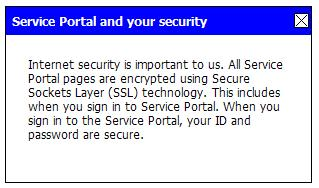

This artifact contains utilities (Java API's and JSP tags) for
Java portlets built using the Shared Portal Framework (SPF).
Shared Portal Framework - Portlet Utilities - Developer's Guide
Table of Contents
- 1. Overview
- 2. Internationalization
- 3. Online Help
- 4. Text Interpolation
- 4.1. About text interpolation
- 4.2. Interpolating text
using Java code
- 4.3. Interpolating text using
JSP tag libraries
- 4.4. Using the
htmlviewer
portlet to display interpolated text from files
- 4.5. Authoring text using
interpolation tokens
- 4.5.1. Referencing URLs
(
{CONTENT-URL:path}, {LOCALIZED-CONTENT-URL:path>,
{REQUEST-URL}, {REQUEST-URL:spec}, {SITE-URL},
{SITE-URL:spec})
- 4.5.2. Displaying user
information (
{NAME}, {EMAIL}, {LANGUAGE-CODE},
{LANGUAGE-CODE:case}, {COUNTRY-CODE},
{COUNTRY-CODE:case}, {LANGUAGE-TAG},
{LANGUAGE-TAG:case}, {HPP-LANGUAGE-CODE},
{HPP-LANGUAGE-CODE:case}, {USER-PROPERTY:key})
- 4.5.3. Permissioning
content for authorized users (
{LOGGED-IN}, {LOGGED-OUT},
{ROLE:role-names}, {GROUP:group-names})
- 4.5.4. Consolidating
content for easier administration (
{PORTLET:friendly-ids},
{PAGE:friendly-ids}, {SITE:site-names},
{INCLUDE:key})
- 4.5.5. Miscellaneous (
{AFTER:date},
{BEFORE:date}, {SITE-NAME}, {URL-ENCODE:string})
- 5. Portal Data
- 6. Error Handling
- 7. Document History
1. Overview
This is the developer's guide for the Shared Portal
Framework (SPF) portlet utilities. The SPF portlet utilities are a
collection of Java classes and JSP tag libraries providing useful
functionality for SPF Java portlet developers in the following areas:
- Internationalization - the SPF portlet
utilities provide Java classes and JSP tags for handling all kinds of
UI resources in your code (messages, images, etc) so that they can be
localized
- Online Help - the SPF portlet utilities
provide Java classes and JSP tags which make it easier for you to
develop online help
- Text Interpolation - the SPF portlet
utilities provide Java classes for interpolating and displaying text
(including special markup tokens) from files or strings to users
(saving you time when developing portlets that mostly display static
text)
- Portal Data - the SPF portlet utilities
provide Java classes for accessing data passed by the SPF (Vignette)
portal
- Error Handling - the SPF portlet
utilities provide Java classes to assist you with error handling,
especially system error handling (saving you time developing rote
handlers for system errors)
The SPF portlet utilities augment HP IT's WPAP (Web Presentation
Architecture - Portlet Edition) framework, which in turn augments the
Spring consortium's Portlet MVC framework. These are all among the
several SPF artifacts for SPF developers. See other
libraries.
1.1. Installation
1.1.1 Installation of the SPF portlet utilities JAR
The SPF portlet utilities are distributed in Java JAR format. The
base JAR filename is spf-portlet-utilities.jar; typically a
version number is included (for example, spf-portlet-utilities-1.0.0.jar).
The SPF portlet utilities are distributed through Maven 2:
To get the SPF portlet utilities, download the latest released
version from the repository. As usual with any JAR file, include it in
your portlet application's /WEB-INF/lib folder.
1.1.2 Installation of i18n_portlet_config.properties
(optional)
Note: You only need to concern yourself with i18n_portlet_config.properties
if you have external supporting
resources and you are either putting the portlet resource
bundle folder in a non-default location, or you are deploying the
file relay servlet in a non-default location.
To install this file:
-
Download the template for i18n_portlet_config.properties.
It is packaged with the rest of the SPF portlet configuration file
templates, in the spf-portlet-config.jar. Download the
latest version of this JAR (typically a version number is affixed to
the JAR filename) and extract the i18n_portlet_config.properties
template file from it.
You can get the latest spf-portlet-config.jar from
the SPF team on their Maven 2 repository, here: http://samson.atl.hp.com:8081/nexus/content/groups/public/com/hp/it/spf/xa/spf-portlet-config/
(browse for the latest version).
-
Customize the properties in the file as needed - see
instructions for configuring
the i18n_portlet_config.properties.
-
Include the customized file, named i18n_portlet_config.properties,
with your portlet application. You can put the file anywhere that the
system classloader searches: inside your portlet application (eg in /WEB-INF/classes)
or in any folder outside of the WAR which is named in the classpath for
your JVM. If you need to make the configuration easily performable by
an administrator, we recommend the latter; otherwise the former is
easier because it is one-time setup.
If you are interested in externalizing the i18n_portlet_config.properties
from the portlet WAR, check how your application server is configured.
If you are using an application server hosting environment, like DASH
or SASU, they probably will have provided you a "global resources"
folder on the server filesystem and in the JVM classpath. You would put
the i18n_portlet_config.properties file there, if you
wanted it to be external to your portlet WAR (eg so the administrator
can easily customize it).
Note: Depending on the search order performed by your
system classloader, you may be able to do both: include a i18n_portlet_config.properties
inside your application, and also let the administrator optionally
override it when needed, by putting an i18n_portlet_config.properties
outside of the WAR. For this to work, your classloader must search the
external folders in the classpath before searching inside the
WAR. If you are interested in this "mixed" deployment of i18n_portlet_config.properties,
be sure to test it out first, as actual behavior may vary by
environment (application server, etc).
1.1.3 Installation of init_relay.properties
(optional)
Note: You only need to concern yourself with init_relay.properties
if you have external supporting
resources and you are dis-satisfied with the configuration in init_relay_default.properties
(which is delivered inside the SPF portlet utilities JAR). See the
discussion in the package
description for the relay servlet.
To install this file:
-
Download the template for init_relay.properties. It
is packaged with the rest of the SPF portlet configuration file
templates, in the spf-portlet-config.jar. Download the
latest version of this JAR (typically a version number is affixed to
the JAR filename) and extract the init_relay.properties
template file from it.
You can get the latest spf-portlet-config.jar from
the SPF team on their Maven 2 repository, here: http://samson.atl.hp.com:8081/nexus/content/groups/public/com/hp/it/spf/xa/spf-portlet-config/
(browse for the latest version).
-
Customize the properties in the file as needed - see
instructions for configuring the init_relay.properties.
-
Include the customized file, named init_relay.properties,
with your relay servlet application (eg, your portlet application, if
that is where you are deploying the relay servlet). You can put the
file anywhere that the system classloader searches: inside your portlet
application (eg in /WEB-INF/classes) or in any folder
outside of the WAR which is named in the classpath for your JVM. See
the discussion on this point above, in regard to i18n_portlet_config.properties
- the same comments apply to init_relay.properties.
1.2. Dependencies
The SPF portlet utilities depend on WPAP and all of the various
technologies upon which WPAP in turn depends:
- Spring Portlet MVC
- Java Portlet
- Java Servlet
- JSP
In addition, the SPF portlet utilities depend on the SPF commmon
utilities (common utilities for both portlet and portal components in
the Shared Portal Framework).
All of these dependencies are managed through Maven. For a list
of the exact current dependencies, see the Maven POM for the SPF portlet
utilities. You can download it from the Maven repository mentioned
above. As usual, all of these JAR dependencies also need to be included
when you build your portlet application's /WEB-INF/lib.
1.3. Other libraries for SPF portlet developers
1.3.1. WPA Portlet Edition
The SPF portlet utilities augment HP IT's WPA Portlet Edition
framework. Several facilities which SPF portlet developers will use
(such as Timber for logging) are provided by WPAP. See the developer's
site for WPA Portlet Edition here: http://intranet.hp.com/Sites/SOA/TechnicalDocs/WPAPortlet/Pages/framework.aspx
1.3.2. Spring Portlet MVC
WPAP in turn augments the open-source Spring Portlet MVC
framework. The basic workflow of an SPF portlet, for example, is
typically provided by Spring Portlet MVC. See the Spring Portlet MVC
developer's site here: http://static.springframework.org/spring/docs/2.0.x/reference/portlet.html
1.3.3. Portlet 2.0 (JSR 286)
The SPF portlet utilities are compatible with JSR 286, the
Portlet 2.0 specification. They are built with the Portlet 2.0 API's.
Most features rely only on JSR 168 (Portlet 1.0); but some key features
(notably, access to use data) do require Portlet 2.0. Please use the
Portlet 2.0 API's for your project. Except where noted in this guide,
only JSR 168 is required.
1.3.4. SPF Common Utilities
The SPF common utilities, used both by SPF portlets and portal
components (ie Vignette components), contain a number of useful API's
for SPF portlet developers, including:
- building portal page URLs, including portal page URLs which
target portlets on those pages and pass them parameters
- managing your application's configuration properties using
hot-reloadable external files
- performing miscellaneous
internationalization/localization-related tasks such as localized
display of names (user, locale, timezone) in SPF-standard format, and
transformation between locales, HP Passport language codes, and RFC
3066 language tags
- and more
These functionalities are in a separate package so that they can
be used by SPF's Vignette portal components as well. In some cases they
are inherited into the SPF portlet utilities (so you get them too when
you import the SPF portlet utility class), and in other cases you have
to import them directly.
See the SPF Common Utilities Developer's Guide here: http://samson.atl.hp.com:8080/hudson/job/spf-common-utilities/site/apidocs/overview-summary.html
1.3.5. SPF htmlviewer Portlet
The Shared Portal Framework includes a portlet application, htmlviewer,
which you can use with minimal customization. This portlet renders a
text file, such as an HTML file (containing arbitrary HTML, JavaScript,
and/or CSS), to the user.
- The file rendered is the best-fit localized version available
for the user amongst a bundle of files located inside the application
WAR, or on the server filesystem outside of it (eg where deposited an
administrator).
- The file may also include special markup tokens for
certain dynamic functionality, as per the SPF portlet utilities' text interpolation capabilities. For example, you can
permission content in the file by group or role; include
possibly-localized images and other static resources; etc.
- The
htmlviewer portlet's view mode
renders the file, and its config mode lets the portlet
administrator configure the portlet (eg specify which bundle of HTML
files to render).
The htmlviewer portlet is often a quick and easy
basis for developing a simple, static or mostly-static portlet for your
SPF portal site. You don't write any code or configure any Spring or
portlet XML files; you just supply the text files for it to display.
For more information, see the SPF HTML Viewer Portlet
Administration and Developer's Guide here: http://samson.atl.hp.com:8080/hudson/job/spf-html-viewer/site/overview.html
2. Internationalization
Spring Portlet MVC (the basis of the SPF portlet utilities and
WPAP) provides basic support for internationalizing text strings
(message resources) in your portlet application. The SPF portlet
utilities (primarily the {@link
com.hp.it.spf.xa.i18n.portlet.I18nUtility} class) extend the Spring
functionality primarily in these directions:
- internationalizing access to other static resources (images,
PDF's, etc)
- injecting contextual help into your message resources
- placing no-localization reminders into your message resources
- supporting placement of all of these resources both internal
and external to your portlet application
- miscellaneous useful methods, inherited from the common {@link
com.hp.it.spf.xa.i18n.I18nUtility} class (see using the common
I18nUtility
at the end of this section)
This chapter describes these extensions.
2.1. Kinds of resources
With the SPF portlet utilities, you can internationalize access
to your text strings (message resources) and other static resources
(supporting resources like images, HTML, PDF, etc), so that they can be
localized.
2.1.1. Message resources (message properties)
Message resources (sometimes just called messages) are
text strings used in your UI. They are managed in Java message property
files as per the usual Java {@link java.util.ResourceBundle} standard.
If your application's messages are going to be sourced elsewhere - in a
database, an XML file, etc - you will have to arrange to export them
into Java message property format before they can be accessed through
SPF (or Spring).
SPF has a well-defined process for localizing your message
resources: translating them from a base locale (typically US
English) into the various other locales you need. See localizing your resources, below.
2.1.2. Supporting resources (images, HTML, PDF, etc)
In addition to message resources, the SPF portlet utilities
provide a solution for internationalized access to supporting
resources: static files like images, HTML, PDF, MS Word documents, etc.
SPF's localization process works for these files too, letting you
get them translated from a base locale (again, typically US
English) into the various other locales you need. See the discussion
around the SPF localization process, below.
2.1.3 Resource bundles
Whether message property files, or supporting files, in SPF you
organize them into resource bundles. These are collections of
files containing identical content, just localized for different
locales. The base file contains the content for the base locale
(typically US English). The other files in the bundle each contain a
translation of that content for another locale. As with the Java
standard for {@link java.util.ResourceBundle}, the base file should not
have any locale tag, while the other files should be tagged according to
their locale, as follows:
base-filename_lang_CC.extension
lang is the 2-character ISO
639-1 language code for the locale (lowercase)CC is the 2-character ISO
3166-1 country code for the locale (uppercase)
For example, here is a collection of files constituting a message
resource bundle, where messages.properties is the base
filename:
messages.properties <-- the base file
messages_ja_JP.properties <-- the same file localized for Japan - Japanese
messages_zh_CN.properties <-- the same file localized for China - Chinese
messages_zh_TW.properties <-- the same file localized for Taiwan - Chinese
Here is a collection of files constituting an image resource
bundle, where picture.jpg is the base filename:
picture.jpg <-- the base file
picture_ja_JP.jpg <-- the same file localized for Japan - Japanese
picture_zh_CN.jpg <-- the same file localized for China - Chinese
picture_zh_TW.jpg <-- the same file localized for Taiwan - Chinese
Note: SPF will generally use full (ie language- and
country-specific) locales. Your resource bundles are encouraged to do
likewise. However if you want to offer localization at the level of
language-only, you can do that. For example, while users of your portlet
may present with both France - French (fr-FR) and France -
Canada (fr-CA), if there is no difference in those
translations you could just have one file in your resource bundle for
them. Just drop the country code from the tagged locale:
picture.jpg <-- the base file
picture_fr.jpg <-- the same file localized for country-generic French
picture_ja_JP.jpg <-- the same file localized for Japan - Japanese
picture_zh_CN.jpg <-- the same file localized for China - Chinese
picture_zh_TW.jpg <-- the same file localized for Taiwan - Chinese
As with the Java standard for {@link java.util.ResourceBundle},
all of the SPF (and Spring) internationalization utilities will search
for the most-specific match for the user's locale first, ultimately
falling back upon your base file.
2.2. Where to put your resources
You have a choice where you put your resource bundles. You may
put them into your portlet application (WAR) where they would
traditionally go (we call these internal resources). But you may
also put them outside, into a well-known folder on the portlet server
called the portlet resource bundle folder - we call these external
resources.
2.2.1. Internal resources (portlet application)
You may put your message properties and supporting resource files
into your portlet WAR where they traditionally go:
-
Your message properties would go into your WEB-INF/
folder, under some appropriate sub-path accessible to your Spring
configuration. For example:
<root>
WEB-INF/
i18n/
messages.properties
messages_fr_FR.properties
...
Also, be sure to configure Spring properly in your portlet
application, so that can find those message properties. For example, if
you use Spring's {@link
org.springframework.context.support.ReloadableResourceBundleMessageSource}
class, you would put this into your application context configuration
for a bundle of message properties with basename of messages
(eg messages.properties, messages_fr_FR.properties,
etc):
<bean id="messageSource"
class="org.springframework.context.support.ReloadableResourceBundleMessageSource">
<property name="basenames">
<list>
<value>
WEB-INF/i18n/messages
</value>
... <-- other message bundles in the basenames list go here
</list>
</property>
</bean>
Note: Whatever your message source configuration, be sure
to put it into the root application context file for your portlet
application. Do not put it into an application context file you have
defined specifically for a portlet. Doing so will work with the Spring
standard message API's and tags, but not with the SPF ones. Putting
your message source configuration into the root application context
file will work with both the Spring-standard and SPF API's and tags.
-
Your other static resource files (images, videos, PDF's, etc)
would go into respective folders at the root of your portlet WAR. For
example, if you have a bundle of HTML files (text.html, text_es_MX.html,
etc) and a bundle of images (picture.jpg, picture_ja.jpg,
etc), they could go into your portlet WAR as follows:
<root>
html/
text.html
text_es_MX.html
...
images/
picture.jpg
picture_ja.jpg
...
Then when you use the standard Spring message API's, or the SPF
portlet message API's in {@link
com.hp.it.spf.xa.i18n.portlet.I18nUtility}, or the tag libraries for
either, they will find your message resources inside your portlet WAR.
And when you use the localized file access API's in I18nUtility,
they will find your static resource files there likewise.
2.2.2. External resources (portlet resource bundle folder)
You may instead put your messages and other resources outside
of your portlet WAR. Why? Doing so may have some advantages - for
example, it may make for easier administration of the resources.
Currently the SPF supports you putting them into what is called the portlet
resource bundle folder, which is any folder on the portlet server's
filesystem to which the portlet JVM has at least read access.
-
Put the path for your portlet bundle folder into the classpath
of your server's JVM. Or, put some parent path for it into the
classpath. If you are using an application-hosting service (like SASU),
they may already have defined for you a standard path from which to
load so-called "global resources" (like externally-administered
configuration files), and they may have put that into the classpath
already. In any event, we recommend making the portlet bundle folder be
a subfolder of your "global resources" classpath folder.
For example, if you are using SASU, it may be that /opt/sasuapps/sp/global_resources
is already your assigned classpath folder for all global resources (eg
configuration files). If that is the case, we recommend creating the
subfolder portlet/i18n/ underneath it, so that /opt/sasuapps/sp/global_resources/portlet/i18n/
is your portlet bundle folder (which matches the default assumed by the
SPF portlet utilities, see point 3 below).
-
Put your message properties and other resource files into your
portlet bundle folder. We recommend you use subfolders for further
organization - for example, you could put message properties in the
portlet bundle folder proper; images in its images/
subfolder; etc. Like this (example):
/opt/sasuapps/sp/global_resources/ <-- this is in the classpath
... <-- misc other external config files can go here, like i18n_portlet_config.properties
portlet/i18n/ <-- this is your portlet bundle folder
html/ <-- this is your portlet bundle HTML subfolder
text.html
text_es_MX.html
...
images/ <-- this is your portlet bundle images subfolder
picture.jpg
picture_ja.jpg
...
messages.properties
messages_fr_FR.properties
...
-
Configure Spring properly so it can find those externalized
message properties relative to the classpath. We recommend you use
Spring's {@link
org.springframework.context.support.ReloadableResourceBundleMessageSource}
class, since that makes your message properties hot-reloadable (ie your
administrator can update your message bundles without restarting the
JVM). Your Spring application context configuration would look similar
to the one for internal resources
- but be sure to specify loading from the classpath: and
specify a positive cacheSeconds, like this:
<bean id="messageSource"
class="org.springframework.context.support.ReloadableResourceBundleMessageSource">
<property name="cacheSeconds" value="1"/>
<property name="basenames">
<list>
<value>
classpath:portlet/i18n/messages
</value>
... <-- other message bundles in the basenames list go here
</list>
</property>
</bean>
Note: Whatever your message source configuration, be sure
to put it into the root application context file for your portlet
application. Do not put it into an application context file you have
defined specifically for a portlet. Doing so will work with the Spring
standard message API's and tags, but not with the SPF ones. Putting
your message source configuration into the root application context
file will work with both the Spring-standard and SPF API's and tags.
-
If you chose a non-default location for the portlet bundle
folder, configure it in i18n_portlet_config.properties
(see below). The default location is hardcoded in {@link
com.hp.it.spf.xa.i18n.portlet.I18nUtility#BUNDLE_DIR_DEFAULT}, which is
/opt/sasuapps/sp/global_resources/portlet/i18n (as in the
above example) at this time of writing.
-
Finally, if you have non-message static resources (images, etc)
in your portlet bundle folder, and you will be using {@link
com.hp.it.spf.xa.i18n.portlet.I18nUtility} to make URL's for them (eg
to render in the browser), note that SPF uses a file relay
servlet (see discussion below) to
service those URL's. Deploy that relay servlet in any Web application
which is both accessible to the end-user browser, and has access
to the portlet bundle folder. For example, if you are using local
portlets, you could deploy it in your portal application. By default,
SPF assumes you have deployed it in your portlet application, mapped
under the hardcoded {@link
com.hp.it.spf.xa.i18n.portlet.I18nUtility#RELAY_PATH_DEFAULT} path. See
the discussion below for more
information about deploying this servlet. If you deploy it in a
non-default location, you will need to configure that in i18n_portlet_config.properties,
too.
Then when you use the standard Spring message API's, or the SPF
portlet message API's in {@link
com.hp.it.spf.xa.i18n.portlet.I18nUtility}, or the tag libraries for
either, they will find your message resources in your portlet bundle
folder. And when you use the localized file access API's in I18nUtility,
they will find your static resource files there likewise.
2.2.3. Mixing internal and external resources
Note that you can mix both the internal and external approaches
for resource management, if you like:
-
If you want to put some resource bundles inside your portlet WAR
while keeping others external, you can do that. For example, you can
keep your message bundles inside the WAR while keeping all your images
in the portlet bundle folder.
-
If you want to split a bundle across locations - eg keeping the
English (base) files inside the portlet WAR and only keeping your
localized versions outside - you can also do that.
-
Finally, you can even have identically-named bundle files in
both locations. For example, you can keep a "default" / "fallback" set
of bundles inside your portlet WAR, and put "overrides" for them
outside. SPF will search the portlet bundle folder first, only
falling-back to look inside the portlet WAR if the resource was not
found outside.
There are some caveats to this regarding message properties,
however. SPF uses Spring for access to message resources, and Spring
searches these in the order set by the system classloader. For the
"fallback" approach to work, this classloader needs to check inside
your portlet application last, only after having first
checked the classpath. You may or may not be able to control the load
order used by the system classloader in your application server. Test
it.
2.3. Accessing message resources using Java code
Once your message resources have been created and placed as discussed above, you can begin to access
best-fit localized text strings for your user from them in your Java
code. You may use either the standard Spring API's for doing this, or
(recommended) the SPF API's.
Note: In either case, be sure you have configured Spring
to load your message resource, as described above. And (if your message
resources are external to your portlet WAR) be sure you have configured
the portlet resource bundle folder where you put them, in your
JVM classpath.
Note: In both cases, JSP tag libraries are available for
you to use instead of the raw Java API's. See the discussion on this below.
2.3.1. Using Spring (eg MessageSource.getMessage)
See the Spring documentation for any class implementing {@link
org.springframework.context.MessageSource} - for example, {@link
org.springframework.context.ApplicationContext}. You use one of the getMessage
API's, such as {@link
org.springframework.context.ApplicationContext#getMessage(String,Object[],String,Locale)}.
Note: If you use the Spring API's, you will not benefit
from any of the enhanced
message capabilities supported by the SPF portlet utilities' {@link
com.hp.it.spf.xa.i18n.portlet.I18nUtility} class.
2.3.2. Using SPF (I18nUtility.getMessage)
SPF's I18nUtility.getMessage API's wrap around
Spring and provide the following extra capability:
-
In the SPF localization process,
you can mark sections of your messages which you do not want the
translators to localize, using the special <no_localization>...</no_localization>
tags. The SPF I18nUtility.getMessage API's automatically
remove these for you; Spring does not.
For example, in your message properties you can have:
key=This part should be translated <no_localization>but this part should not</no_localization>.
SPF's I18nUtility.getMessage API's will
automatically remove the special <no_localization>...</no_localization>
markup from this, if the translator did not do so already.
-
The SPF I18nUtility.getMessage API's let you inject
contextual help into the middle of
a message. This can be very useful when you need to use contextual
help, because by definition contextual help is typically help content
that is embedded inline with broader text. If you break such text
apart, so that you can generate standalone contextual help around just
the text unit needing it, the broader text might become difficult to
translate correctly. Leaving the text intact, and injecting the
contextual help into it, is the proper way to do it, and is supported
by the SPF I18nUtility.getMessage API's.
For example, you can have the following in your message
properties:
key=Here is some <contextual_help>help</contextual_help> for you.
The SPF I18nUtility.getMessage API's will
automatically inject the contextual help which you provide around the
content surrounded by the special <contextual_help>...</contextual_help>
markup ("help" in this example). More on this below.
The I18nUtility.getMessage API's are:
- {@link
com.hp.it.spf.xa.i18n.portlet.I18nUtility#getMessage(PortletRequest,String)}
- {@link
com.hp.it.spf.xa.i18n.portlet.I18nUtility#getMessage(PortletRequest,String,boolean)}
- {@link
com.hp.it.spf.xa.i18n.portlet.I18nUtility#getMessage(PortletRequest,String,ContextualHelpProvider[])}
- {@link
com.hp.it.spf.xa.i18n.portlet.I18nUtility#getMessage(PortletRequest,String,Locale)}
- {@link
com.hp.it.spf.xa.i18n.portlet.I18nUtility#getMessage(PortletRequest,String,Object[])}
- {@link
com.hp.it.spf.xa.i18n.portlet.I18nUtility#getMessage(PortletRequest,String,String)}
- {@link
com.hp.it.spf.xa.i18n.portlet.I18nUtility#getMessage(PortletRequest,String,String,Object[],ContextualHelpProvider[],Locale,boolean)}
The last one is the core API which all the others feed into. Here
is a summary of the parameters it takes; the others take a subset of
these. See the method documentation for more information.
-
The current {@link javax.portlet.PortletRequest} (required).
-
The desired message key (required).
-
A String default message value, to be returned
automatically to you if the given message key is not found. (If no
explicit default value is provided, then the message key itself is
returned in that case.)
-
An Object[] array containing any objects whose toString
values should be inserted into any {@link java.text.MessageFormat}
placeholders in the message. For example, in your message properties
you can have:
key=Your user ID is {0}.
Then in your Java code, where request is the PortletRequest
and userID is the user ID:
import com.hp.it.spf.xa.i18n.portlet.I18nUtility;
...
String[] args = new String[] { userID };
String msg = I18nUtility.getMessage(request, "key", args);
-
A ContextualHelpProvider[] array containing any
contextual help you wish to inject into the message. (What is
contextual help, and what does it mean to inject it? See the introduction to contextual help
later in this document.)
For example, let's say you need to produce a UI message like
this (where the word "secure" links to some contextual help not shown
yet):

Using the SPF I18nUtility.getMessage API's, you can
have the following in your message properties:
key=Your sign-in is <contextual_help>secure</contextual_help>
Then, in your Java code, you can create a ContextualHelpProvider
(such as a ClassicContextualHelpProvider)
and pass it in this array. The I18nUtility.getMessage
method will wrap the contextual-help HTML which that ContextualHelpProvider
yields, around the part of the message surrounded by the special
<contextual_help>...</contextual_help> markup - ie the word
"secure". So then you can just output that message and it will contain
the embedded contextual help, too.
Returning to the example, your message properties could look
like this:
key=Your sign-in is <contextual_help>secure</contextual_help>
key.help.title=Service Portal and your security
key.help.content=Internet security is important to us...
And your code would look like this, where request
and response are your {@link javax.portlet.PortletRequest}
and {@link javax.portlet.PortletResponse}, respectively. Note:
this demonstration uses a ClassicContextualHelpProvider
and does not override any of the default style.
import com.hp.it.spf.xa.i18n.portlet.I18nUtility;
import com.hp.it.spf.xa.help.portlet.ClassicContextualHelpProvider;
...
// First get the title for the contextual help.
String helpTitle = I18nUtility.getMessage(request, "key.help.title");
// Now get the main content for the contextual help.
String helpContent = I18nUtility.getMessage(request, "key.help.content");
// Now make the classic contextual help object. Note we don't have to set
// the link content, as I18nUtility will infer that from the special markup
// in the message.
ClassicContextualHelpProvider cchp = new ClassicContextualHelpProvider(request, response);
cchp.setTitleContent(helpTitle);
cchp.setHelpContent(helpContent);
// Now get the main message, with the contextual help embedded automatically
// inside it.
ClassicContextualHelpProvider[] cchps = new ClassicContextualHelpProvider[] {cchp};
String msg = I18nUtility.getMessage(request, "key", cchps);
So then you could output the msg string to the user
- it would look like above when rendered in the user's browser. And
when the user clicked on the "secure" hyperlink, it would look like
this:

Please see the I18nUtility.getMessage method
documentation for more details about passing contextual help providers.
Also see the discussion on contextual
help later in this guide and in the JavaDocs - eg see the {@link
com.hp.it.spf.xa.help.portlet.ClassicContextualHelpProvider}
documentation.
Also, note that the above example illustrates the use of the
SPF-provided "classic" rendition of contextual help (ie the {@link
com.hp.it.spf.xa.help.portlet.ClassicContextualHelpProvider} class).
The SPF contextual-help framework is extensible to custom formats of
contextual help, where you write and then utilize your own contextual
help provider - see the discussion below about creating your
own contextual help provider.
Note: The classic rendition of contextual help utilizes
an "X" image on which the user can click to close the window. This is a
GIF image which you must supply (either inside your portlet
application, or in the external resource bundle folder). You can
localize the image if desired. Name the base file for the image btn_close.gif
and put it in the images/ subfolder (of your portlet WAR
or the external folder). Management of this image is the same as for
any other supporting resource file.
The SPF portlet utilities JAR contains a sample btn_close.gif.
(It is the same one shown in the example above.)
-
A Locale for which to find the best-fitting message
resource. (By default, the method uses the locale contained inside your
PortletRequest.)
-
A boolean switch which controls whether to escape
any HTML meta-characters, like < and >,
found in the message string. For example, if your message property is
this:
key=This is an HTML <head> tag.
Then the following code would escape the HTML inside the message
string (where request is your current {@link
javax.portlet.PortletRequest}:
import com.hp.it.spf.xa.i18n.portlet.I18nUtility;
...
String msg = I18nUtility.getMessage(request, "key", true);
// Now msg is: This is an HTML<head> tag.
If you use this with a message string that contains contextual
help, note that this policy will apply to the contextual help's title
and content as well.
2.4. Accessing message resources using JSP tag libraries
Once your message resources have been created and placed as discussed above, you can begin to access
best-fit localized text strings for your user from them in your JSP's.
You may use either the standard Spring JSP tag libraries for doing this,
or (recommended) the SPF ones.
Note: In either case, be sure you have configured Spring
to load your message resource, as described above. And (if your message
resources are external to your portlet WAR) be sure you have configured
the portlet resource bundle folder where you put them, in your
JVM classpath. See the discussion above.
Note: In both cases, raw Java API's are available for you
to use if you prefer, instead of the JSP tag libraries. See the API descriptions above.
2.4.1. Using Spring (<spring:message>)
See the Spring documentation for any Spring JSP tag interface for
{@link org.springframework.context.MessageSource} - for example, <spring:message>.
Note: If you use the Spring tags, you will not benefit
from any of the enhanced
message capabilities supported by the SPF portlet utility tags.
2.4.2. Using SPF (<spf-i18n-portlet:message>,
<spf-i18n-portlet:param>, and <spf-i18n-portlet:classicContextualHelpParam>)
The SPF portlet utilities provide a JSP tag library which wraps
around I18nUtility.getMessage
to offer the same extended message-handling capabilities. Just as with I18nUtility.getMessage,
with the SPF portlet utilities' message-handling JSP tags, you can:
-
Use <no_localization>...</no_localization>
in your message values to signal to translators that they should leave
the contents untranslated - the SPF will automatically remove that
markup if the translator did not do so already.
-
Use <contextual_help>...</contextual_help>
in your message values to inject contextual help into the middle of a
message (thus avoiding possible translation problems which could occur
if you broke the message into pieces and used standalone contextual
help).
The SPF message-handling tags are thoroughly documented in the package
description. Briefly, they are:
-
<spf-i18n-portlet:message>
-
This tag is the main message tag for the SPF. It takes a message
key and (optionally) a default value and a boolean switch for
HTML-escaping the message value. The usage is:
<%@ taglib prefix="spf-i18n-portlet" uri="/spf-i18n-portlet.tld" %>
...
<spf-i18n-portlet:message
key="message-key"
defaultValue="default-value"
escape="true-or-false"
/>
For example, consider this message property in your resource
bundle:
key=This is an HTML <head> tag.
If you wanted the HTML embedded inside the message value to
render literally, you would use this:
<%@ taglib prefix="spf-i18n-portlet" uri="/spf-i18n-portlet.tld" %>
...
<spf-i18n-portlet:message key="key" escape="true" />
In addition, the body of the <spf-i18n-portlet:message>
tag may contain either or both of the following tags, zero or more
times.
-
<spf-i18n-portlet:param>
-
This tag is only used inside the tag body of <spf-i18n-portlet:message>.
You use it to pass a string into a {@link java.test.MessageFormat}
placeholder in the message value. The usage is:
<%@ taglib prefix="spf-i18n-portlet" uri="/spf-i18n-portlet.tld" %>
...
<spf-i18n-portlet:param value="string" />
For example, if your message properties contain this:
key=Your name is {0} and your age is {1}.
Then you would populate the parameters with the name
and age variables as follows:
<%@ taglib prefix="spf-i18n-portlet" uri="/spf-i18n-portlet.tld" %>
...
<spf-i18n-portlet:message key="key">
<spf-i18n-portlet:param value="<%= name %>" />
<spf-i18n-portlet:param value="<%= age %>" />
</spf-i18n-portlet:message>
-
<spf-i18n-portlet:classicContextualHelpParam>
-
This tag is only used inside the tag body of <spf-i18n-portlet:message>.
You use it to inject contextual help into the message value, where the
special <contextual_help>...</contextual_help>
markup is found. The format of contextual help which is injected is the
"classic" rendition.
This tag is documented in the Online Help
section in this guide. Please see the <spf-i18n-portlet:classicContextualHelpParam>
documentation there.
-
Parameters
for custom renditions of contextual help
-
The SPF provides you with the <spf-i18n-portlet:classicContextualHelpParam>
(see above) which gives you a JSP tag for injecting the "classic"
rendition of contextual help into a message. The SPF contextual help
framework is extensible, however, and you can create your own rendition
of contextual help instead. First you would create your
custom contextual help provider, then you would create a custom
contextual help provider parameter tag for it. Please see the
documentation below.
The SPF message-handling tags are thoroughly documented in the package
description. Please see that documentation for more information.
2.5. Accessing supporting resources using Java code
Once your supporting resources have been created and placed as discussed above, you can begin
to access them using the SPF portlet I18nUtility. There are
3 ways of access supported:
-
You can get a URL pointing to the particular supporting resource
file in a bundle which best-fits the user's locale. You can then output
that URL to the user - for example, inside an HTML <IMG>
tag as the SRC attribute, to display the proper localized
version of any image to the user. Use the I18nUtility.getLocalizedFileURL
methods for this.
-
If you need to process the file server-side instead, you can get
an {@link java.io.InputStream} for the particular one which best-fits
the user's locale. Use the I18nUtility.getLocalizedFileStream
methods for this.
-
If you need to just check what the best-fit localized file in a
particular supporting resource would be, and whether it exists, then
you can use the I18nUtility.getLocalizedFileName
methods for this.
Note: In all of these cases, if you are putting your
supporting resource files in the portlet bundle folder outside of the
WAR, you will need to configure i18n_portlet_config.properties
properly if your portlet bundle folder is not in the default location
(indicated in {@link
com.hp.it.spf.xa.i18n.portlet.I18nUtility#BUNDLE_DIR_DEFAULT}).
2.5.1. Using I18nUtility.getLocalizedFileURL
Note: There is an SPF-provided JSP tag library for this -
see <spf-i18n-portlet:localizedFileURL>
description below.
These methods return a URL string which the user's browser can
use to access the proper localized version of a supporting resource for
the user's locale. Your bundle of supporting resource files can be
located inside your portlet WAR, or in the portlet resource
bundle directory outside of the WAR, or in both locations, as discussed above.
The returned URL string will be properly encoded for the portlet
(taking into account WSRP and the portal as needed), and thus ready to
output to the user (eg, in the SRC attribute of an HTML <IMG>
tag).
-
If the best-fit localized file is found in the portlet bundle
folder outside of the WAR, then the returned URL string will be a relay
servlet URL pointing to that file. This URL will be built pointing to
the URL for the relay servlet which you configured in i18n_portlet_config.properties
(or, by default, it will be assumed to be deployed under the {@link
com.hp.it.spf.xa.i18n.portlet.I18nUtility#RELAY_PATH_DEFAULT} in the
current portlet application). Be sure you have configured and deployed
the relay servlet properly at that URL. See the discussion below for more
information.
-
If the best-fit localized file is found inside the portlet WAR
itself, then the returned URL string will be a static resource string
pointing to that file.
The I18nUtility.getLocalizedFileURL methods are:
- {@link
com.hp.it.spf.xa.i18n.portlet.I18nUtility#getLocalizedFileURL(PortletRequest,PortletResponse,String)}
- {@link
com.hp.it.spf.xa.i18n.portlet.I18nUtility#getLocalizedFileURL(PortletRequest,PortletResponse,String,boolean)}
- {@link
com.hp.it.spf.xa.i18n.portlet.I18nUtility#getLocalizedFileURL(PortletRequest,PortletResponse,String,Locale,boolean)}
-
These methods take the base filename of the supporting resource
bundle. That filename may include any subfolder (relative to the
portlet bundle directory / portlet WAR root) where the bundle is
located. The methods use the Java-standard {@link
java.util.ResourceBundle} sequence for finding the best-fit file in
your bundle for the user's locale, looking across first your external
resources, then your internal resources.
For example, to get the best-fit localized URL for the picture.jpg
image, where the bundle is stored (externally or internally) in the images/
subfolder (and where request and response are
the {@link javax.portlet.PortletRequest} and {@link
javax.portlet.PortletResponse} respectively):
import com.hp.it.spf.xa.i18n.portlet.I18nUtility;
...
String url = I18nUtility.getLocalizedFileURL(request, response, "/images/picture.jpg");
If the best-fit localized version of picture.jpg
was found in the portlet bundle folder, then url in this
example would be a file-relay servlet URL pointing to that file. For
example, if picture_pt_BR.jpg (ie the Brazil Portuguese
version of the file) was the best candidate, then url
would get a URL string containing the portlet-encoded form of /relay/images/picture_pt_BR.jpg
(assuming the default setup of the relay servlet, which is under the /relay
location mapping in the current portlet application).
On the other hand, if the best-fit localized version of picture.jpg
was found inside the portlet WAR, then url in this example
would be a static resource URL pointing to it. For example, it would be
the portlet-encoded form of /images/picture_pt_BR.jpg.
If the resource bundle for the given base name simply is not
found, then a static resource URL pointing to the basename (eg /images/picture.jpg)
would be returned by default. (This will cause a 404 error if later
opened by the browser, making a missing resource obvious and detectable
during testing.)
{@link
com.hp.it.spf.xa.i18n.portlet.I18nUtility#getLocalizedFileURL(PortletRequest,PortletResponse,String,Locale,boolean)}
is the core API which all the others feed into. Here is a summary of
the parameters it takes; the others take a subset of these. See the
method documentation for more information.
-
The current {@link javax.portlet.PortletRequest} (required).
-
The current {@link javax.portlet.PortletResponse} (required).
-
The base filename (required).
-
The {@link java.util.Locale} to use when searching for the
best-fit candidate file. By default, the locale inside the PortletRequest
is used.
-
The boolean switch, set to false, lets you just
lookup the given base file itself, without attempting to find the best
candidate. By default, this switch is true (enabling the
best-localized-candidate search).
- {@link
com.hp.it.spf.xa.i18n.portlet.I18nUtility#getLocalizedFileURL(PortletRequest,PortletResponse,String,String)}
- {@link
com.hp.it.spf.xa.i18n.portlet.I18nUtility#getLocalizedFileURL(PortletRequest,PortletResponse,String,String,Locale)}
-
These methods get the localized file differently. You give them
a message key and they lookup that message in your message resource
bundles. This message lookup proceeds as described for the I18nUtility.getMessage
API's above. The message value is then treated as the name of the
localized (not base) file. The subfolder relative to the portlet bundle
folder or portlet WAR, where the file is located, may be part of that
value. If no actual file exists (as either an external or internal
resource) matching that value, then a static resource URL pointing to
it anyway will be returned. (As above, this will intentionally cause a
404 error should the browser open it.)
Note:These methods offer no real advantage over the
others, since they are more cumbersome to setup (you need to make sure
that the proper localized filenames for each locale get put - eg by the
translators - into the message properties file for that locale).
Therefore we recommend using the other methods.
{@link
com.hp.it.spf.xa.i18n.portlet.I18nUtility#getLocalizedFileURL(PortletRequest,PortletResponse,String,String,Locale)}
is the core API which the other method feeds into. Here is a summary of
the parameters it takes; the other method takes a subset of these. See
the method documentation for more information.
-
The current {@link javax.portlet.PortletRequest} (required).
-
The current {@link javax.portlet.PortletResponse} (required).
-
The message key string for the localized filename (required).
-
The default value string to use for the localized filename, if
the message is not found.
-
The {@link java.util.Locale} to use when searching for the
best-fit candidate file. By default, the locale inside the PortletRequest
is used.
2.5.2. Using I18nUtility.getLocalizedFileStream
Instead of returning a URL string, these methods return an {@link
java.io.InputStream} for the proper localized version of a supporting
resource, given the user's locale. If no appropriate file could be
found, then they return null. Otherwise they operate the
same as the I18nUtility.getLocalizedFileURL
methods (see above).
The I18nUtility.getLocalizedFileStream methods are:
- {@link
com.hp.it.spf.xa.i18n.portlet.I18nUtility#getLocalizedFileStream(PortletRequest,String)}
- {@link
com.hp.it.spf.xa.i18n.portlet.I18nUtility#getLocalizedFileStream(PortletRequest,String,boolean)}
- {@link
com.hp.it.spf.xa.i18n.portlet.I18nUtility#getLocalizedFileStream(PortletRequest,String,Locale,boolean)}
-
These methods take the base filename of the supporting resource
bundle. Building on the above example, here is how we get an InputStream
for the something.xml file. This file (and its localized
versions) in this example are stored in the xml/ subfolder
of either the portlet WAR or the portlet resource bundle folder.
import com.hp.it.spf.xa.i18n.portlet.I18nUtility;
...
InputStream file = I18nUtility.getLocalizedFileStream(request, "/xml/something.xml");
So, if the best-fit localized file in the something.xml
bundle was something_ja_JP.xml, then that is the InputStream
that will be returned. null is returned if no good
candidate exists.
{@link
com.hp.it.spf.xa.i18n.portlet.I18nUtility#getLocalizedFileStream(PortletRequest,String,Locale,boolean)}
is the core API which the others feed into. Here is a summary of the
parameters it takes; the others take a subset of these. See the method
documentation for more information.
-
The current {@link javax.portlet.PortletRequest} (required).
-
The base filename (required).
-
The {@link java.util.Locale} to use when searching for the
best-fit candidate file. By default, the locale inside the PortletRequest
is used.
-
The boolean switch, set to false, lets you just
lookup the given base file itself, without attempting to find the best
candidate. By default, this switch is true (enabling the
best-localized-candidate search).
- {@link
com.hp.it.spf.xa.i18n.portlet.I18nUtility#getLocalizedFileStream(PortletRequest,String,String)}
- {@link
com.hp.it.spf.xa.i18n.portlet.I18nUtility#getLocalizedFileStream(PortletRequest,String,String,Locale)}
-
This method gets the localized file differently. You give it a
message key and it looks up that message in your message resource
bundles. The message value is then treated as the name of the localized
(not base) file, and an InputStream is returned for it (or
null if it does not exist).
Note:Using this method offers no real advantage over the
others, and is more cumbersome to setup (you need to make sure that the
proper localized filenames for each locale, get into the message
properties file for that locale). Therefore we recommend using the
other methods.
{@link
com.hp.it.spf.xa.i18n.portlet.I18nUtility#getLocalizedFileStream(PortletRequest,String,String,Locale)}
is the core API which the other method feeds into. Here is a summary of
the parameters it takes; the other method takes a subset of these. See
the method documentation for more information.
-
The current {@link javax.portlet.PortletRequest} (required).
-
The message key string for the localized filename (required).
-
The default value string to use for the localized filename, if
the message is not found.
-
The {@link java.util.Locale} to use when searching for the
best-fit candidate file. By default, the locale inside the PortletRequest
is used.
2.5.3. Using I18nUtility.getLocalizedFileName
Instead of returning either a URL string or an {@link
java.io.InputStream}, these methods just lookup the best-fit localized
version of the file for the user's locale, and return its filename. The
filename is returned relative to the location where the file was found
(ie, relative to the portlet resource bundle folder or portlet
WAR root). The methods return null if no good candidate was
found. These methods are most useful as a test of whether a particular
resource exists, and where it exists (is it internal or external).
The I18nUtility.getLocalizedFileName methods are:
- {@link
com.hp.it.spf.xa.i18n.portlet.I18nUtility#getLocalizedFileName(PortletRequest,String)}
- {@link
com.hp.it.spf.xa.i18n.portlet.I18nUtility#getLocalizedFileName(PortletRequest,String,boolean)}
- {@link
com.hp.it.spf.xa.i18n.portlet.I18nUtility#getLocalizedFileName(PortletRequest,String,Locale,boolean)}
-
These methods take the base filename of the supporting resource
bundle, and only look inside the portlet application WAR.
Building on the above example, here is how we check whether any
good-candidate localized version of something.xml exists
in the portlet WAR (in the xml/ subfolder):
import com.hp.it.spf.xa.i18n.portlet.I18nUtility;
...
if (I18nUtility.getLocalizedFileName(request, "/xml/something.xml") != null) {
... // exists in portlet WAR
}
{@link
com.hp.it.spf.xa.i18n.portlet.I18nUtility#getLocalizedFileName(PortletRequest,String,Locale,boolean)}
is the core API which the others feed into. Here is a summary of the
parameters it takes; the others take a subset of these. See the method
documentation for more information.
-
The current {@link javax.portlet.PortletRequest} (required).
-
The base filename (required).
-
The {@link java.util.Locale} to use when searching for the
best-fit candidate file. By default, the locale inside the PortletRequest
is used.
-
The boolean switch, set to false, lets you just
lookup the given base file itself, without attempting to find the best
candidate. By default, this switch is true (enabling the
best-localized-candidate search).
- {@link
com.hp.it.spf.xa.i18n.portlet.I18nUtility#getLocalizedFileName(String,Locale)}
- {@link
com.hp.it.spf.xa.i18n.portlet.I18nUtility#getLocalizedFileName(String,Locale,boolean)}
-
These methods take the base filename of the supporting resource
bundle, and only look in the portlet resource bundle
folder. Building on the above example, here is how we check whether any
good-candidate localized version of something.xml exists
in the portlet bundle folder (in the xml/ subfolder):
import com.hp.it.spf.xa.i18n.portlet.I18nUtility;
...
if (I18nUtility.getLocalizedFileName("/xml/something.xml", request.getLocale()) != null) {
... // exists in portlet bundle folder
}
{@link
com.hp.it.spf.xa.i18n.portlet.I18nUtility#getLocalizedFileName(String,Locale,boolean)}
is the core API which the other method feeds into. Here is a summary of
the parameters it takes; the other method takes a subset of these. See
the method documentation for more information.
-
The base filename (required).
-
The {@link java.util.Locale} to use when searching for the
best-fit candidate file (required)
-
The boolean switch, set to false, lets you just
lookup the given base file itself, without attempting to find the best
candidate. By default, this switch is true (enabling the
best-localized-candidate search).
2.6. Accessing supporting resources using JSP tag libraries
Once your supporting resources have been created and placed as discussed above, you can begin
to generate best-fit localized URL's for them in your JSP's. For
example, you can stick them into HTML <IMG> tag SRC
attributes.
Note: Remember, if you are putting your supporting
resource files in the portlet bundle folder outside of the WAR, you will
need to configure i18n_portlet_config.properties
properly if your portlet bundle folder is at a non-default location (the
default is indicated in {@link
com.hp.it.spf.xa.i18n.portlet.I18nUtility#BUNDLE_DIR_DEFAULT}). You will
likewise need to configure i18n_portlet_config.properties
with the location for the relay servlet, if that is at a non-default
location. And finally, you will need to configure and deploy that
servlet at that location - see discussion
below.
2.6.1. Using <spf-i18n-portlet:localizedFileURL>
The SPF portlet utilities provide a JSP tag, <spf-i18n-portlet:localizedFileURL>,
which wraps around I18nUtility.getLocalizedFileURL
to offer most of the same capabilities. It is thoroughly documented in
the package
description. Briefly:
-
<spf-i18n-portlet:localizedFileURL>
-
This tag takes the base filename (including any subfolder path
relative to the portlet resource bundle folder / portlet WAR root), or
(optionally) a message key for a message resource which indicates the
localized file name. The usage is:
<%@ taglib prefix="spf-i18n-portlet" uri="/spf-i18n-portlet.tld" %>
...
<spf-i18n-portlet:localizedFileURL
file="base-file"
fileKey="localized-file-message-key"
/>
The file attribute lets you provide the base
filename (same as the {@link
com.hp.it.spf.xa.i18n.portlet.I18nUtility#getLocalizedFileURL(PortletRequest,PortletResponse,String)}
method). The fileKey attribute lets you alternatively
provide a message key pointing to the localized filename (same as the
{@link
com.hp.it.spf.xa.i18n.portlet.I18nUtility#getLocalizedFileURL(PortletRequest,PortletResponse,String,String)}
method). The file attribute takes priority. As mentioned
above, there usually is no reason to prefer doing this using the fileKey
attribute.
For example, imagine we have the picture.jpg bundle
of images in our images/ folder. The following JSP code
displays the proper localized version of that image in the browser:
<%@ taglib prefix="spf-i18n-portlet" uri="/spf-i18n-portlet.tld" %>
...
<img src='<spf-i18n-portlet:localizedFileURL file="/images/picture.jpg" />'>
If you put the localized file into the portlet resource
bundle folder, this URL will be a relay servlet URL (properly
portlet-encoded for WSRP and the portal, as needed). Otherwise (ie you
put the localized file into your portlet application), this URL will be
a static resource URL for your application (again, properly-encoded).
See the tag documentation, in the package
description, for more information.
2.7. Providing download service for external resources using RelayServlet
The file relay servlet is an SPF-provided servlet which
services download requests for supporting resource files in the portlet
resource bundle folder. If you are using external resources for supporting
files like images, video, etc, then when you use I18nUtility.getLocalizedFileURL
(or the <spf-i18n-portlet:localizedFileURL>
tag) you will get a URL pointing to this servlet (with the actual
filename as a parameter in the URL). So if you give that URL to a
browser to open, it will be the relay servlet which services that
request.
The relay servlet itself is provided with the SPF portlet
utilities, {@link com.hp.it.spf.xa.relay.servlet.RelayServlet}. All you
need to do is configure and deploy it somewhere. We recommend you deploy
it as part of your portlet application WAR. Alternatively, you can
deploy it in another Web application (such as your portal application,
if your portal server has access to the portlet bundle folder - as in
the case of local portlets). The basic requirements are that, if you do
deploy it elsewhere, that Web application must have access to the
portlet bundle folder, and must in turn be accessible from the user
browser.
The basic steps for configuring and deploying the relay servlet
are documented fully in the package
description. Briefly, they are:
- Configure
web.xml - provide the deployment descriptor for the
servlet
- Configure
init_relay.properties (optional) - provide any non-default
permitted file extensions and their MIME types
- Configure
i18n_portlet_config.properties (optional) - provide any
non-default portlet bundle folder or relay servlet location
- Assembling
the application - assemble the needed artifacts into the application
WAR
Please see the above-referenced documentation for more
information.
2.8. Localizing your resources
You can localize your resources (message property files, images,
HTML files, etc) in whatever way you see fit. The only requirements are:
-
For text resources, you must use UTF-8 character encoding.
-
For Java message property files only, remember that Java's
standard {@link java.util.Properties} class is the basis for loading
those files into the system, and this class cannot load non-ASCII,
UTF-8 characters natively. Therefore you must use the Java-standard native2ascii
tool to convert your non-ASCII UTF-8-encoded characters into ASCII
representation (specifically, into Java's supported \uXXXX
string format for Unicode escape sequences).
-
All localized resource files must be tagged with their
respective locale as per the Java standard for {@link
java.util.ResourceBundle}. This was already described in the section
about resource bundles, earlier
in this document.
2.8.1 The SPF localization process
The Shared Portal Framework provides tools and support for a
localization process using HP's Translation and Localization (T&L) team.
This is a batch (not real-time) process combining manual and automated
activities. In this process:
-
You extract your base (English) message and supporting
resource files requiring localization from the system. You can do this
in the lab (eg checkout from a your revision-control system) or in a
run-time environment (eg extract from the base files already deployed
in production).
-
You convert and pack the base files for the T&L team,
using an SPF-provided perl script, xlate_send.pl. For
example, this removes any Vignette-internal message properties that
never need localization, and packs your files into the T&L team's
required format.
-
You send the packed base files to the T&L team and
request the needed locales.
-
The T&L team translates them for you.
-
You receive the translated files from the T&L team.
-
You unpack and convert the translated files from the T&L
team, using an SPF-provided perl script, xlate_receive.pl.
For example, this unpacks the files from the T&L team's delivery
format, and runs native2ascii
for you against the translated message property files.
-
Finally, you deploy your translations to the system. You
can do this in the lab (eg checkin to your revision-control system) or
in a run-time environment (eg deploy the translations directly to
production).
This process is not further documented in this guide. It is
covered in the SPF Localization Guide.
2.9. Other internationalization topics
This section covers miscellaneous other topics in the subject
area of internationalization.
2.9.1. Getting the locale
Use the Java portlet standard API for this, {@link
javax.portlet.PortletRequest#getLocale()}. As follows (where request
is your PortletRequest):
Locale loc = request.getLocale();
This returns the locale to use in general when handling this
portlet request. Many of the internationalization API's and tags
documented above assume this locale (but the API's all provide
signatures letting you pass another locale if needed).
Where does the locale come from? In SPF, for simplicity, the user
is considered to have one preferred locale at any given time. The SPF
portal framework has the responsibility of resolving that locale from
numerous sources:
- The SPF locale resolver accepts desired locales from the user
according to the following inputs (in order):
- The HP.com-standard
lang and cc
query parameters on the URL.
- The HP.com-standard
lang and cc
cookies.
- The HP Passport core user profile attribute,
langCode.
(Note that the HP Passport residentCountryCode core
profile attribute is not used by HPP itself for locale determination,
so is not used by SPF either.)
- The HTTP-standard
Accept-Language: request
header.
- The SPF locale resolver filters the above inputs by the available
locales for your portal site. (When you configure your portal site in
the SPF portal, you can specify the default locale to use at
your site, as well as any additional locales to support at the
site.)
- The locale from the first input found to match one of the
available locale(s) for the portal site, is the one resolved.
- If none of the inputs provide locale(s) that match the
available ones, then the default locale for the portal site is
resolved.
Once the SPF portal has resolved the locale, that is the locale
which is passed to your portlet inside the PortletRequest.
Note: Your portlet.xml does not need to
specify the JSR-standard <supported-locale>...</supported-locale>
elements in order to have visibility to this locale.
2.9.2. Setting the locale
Generally there is no need for you to be concerned with setting
the locale. Typically you will just use the locale you get. It is the SPF
portal's responsibility to set the locale (including providing the user
with a locale selector widget with which the user can set his/her own
locale). In fact, in the Java portlet API's there are no standard
methods for setting the locale in the response, since that is delegated
to the portal.
If you have a use case where your portlet must set the locale,
the only way you can do this is by calling the portal. The locale
setting will only take effect on subsequent request lifecycles (ie PortletRequest.getLocale
will not start returning the new locale until subsequent requests in the
session) and it will take effect throughout the portal, not just in your
portlet. Consider this carefully before deciding to implement such a use
case.
To call the portal to set a new locale, you must make a {@link
com.hp.it.spf.xa.portalurl.PortalURL} with the new locale set as a
parameter in the URL. Then convert that PortalURL into a
string, and cause the user browser to open that URL string. (For
example, redirect to that URL, or present it as a link or form action to
submit.)
Depending on the type of portal page, and the parameters you
pass, your setting will take effect with varying degrees of persistence:
-
To make the setting last for the rest of the session (until the
user restarts his/her browser):
-
Create a {@link com.hp.it.spf.xa.portalurl.PortalURL} for any
page at your portal site. This is the page where you want the user to
go after the new locale has been set.
-
Set the HP.com-standard lang and cc
parameters as portal parameters on that PortalURL, using
{@link
com.hp.it.spf.xa.portalurl.PortalURL#setParameter(java.lang.String,
java.lang.String)}.
- The
lang parameter should be the ISO
639-1 language code for the new locale (use {@link
java.util.Locale#getLanguage()}).
- The
cc should be the ISO
3166-1 country code (use {@link java.util.Locale#getCountry()} (or
can be omitted if the locale does not include a country).
-
When the user's browser opens this PortalURL, the
SPF portal's locale resolver will resolve that new locale (see discussion above) for the rest of
the session, until the browser is restarted.
-
To make the setting last persistently (ie set it remains even
after browser restart), just as if the user had chosen it with the SPF
locale selector in the portal:
-
Create a {@link com.hp.it.spf.xa.portalurl.PortalURL} for any
page at your portal site. This is the page where you want the user to
go after the new locale has been set.
-
Create another PortalURL for the SPF locale
selector secondary page process-action. The friendly URI for this is
the value of {@link
com.hp.it.spf.xa.misc.portlet.Consts#PAGE_FRIENDLY_URI_SELECT_LOCALE}.
-
In the SPF locale selector PortalURL, set the
following parameters using the {@link
com.hp.it.spf.xa.portalurl.PortalURL#setParameter(java.lang.String,
java.lang.String)} method:
- The value of the first parameter should be the RFC 3066 language
tag for the new locale (use {@link
com.hp.it.spf.xa.i18n.I18nUtility#localeToLanguageTag(Locale)}). The
name of this parameter should be the value of {@link
com.hp.it.spf.xa.misc.portlet.Consts#PARAM_SELECT_LOCALE}.
- The value of the second parameter should be the string of
the first URL (ie where you want the user to be taken after the new
locale has been set). The name of this parameter should be the value
of {@link
com.hp.it.spf.xa.misc.portlet.Consts#PARAM_SELECT_LOCALE_TARGET}.
-
When the user's browser opens this SPF locale selector PortalURL,
the SPF locale selector secondary page will set that new locale
persistently.
-
Note: Neither of the above techniques works-around the
fact that you can only set locales which are configured as available in
the portal site.
2.9.3. Configuring i18n_portlet_config.properties
(optional)
Note: You only need to concern yourself with i18n_portlet_config.properties
if you have external supporting
resources and you are either putting the portlet resource
bundle folder in a non-default location, or you are deploying the
file relay servlet in a non-default location.
The i18n_portlet_config.properties lets you
configure the location of the portlet resource bundle folder, on the
portlet server, and the location of the file relay servlet.
portlet.bundleDirectory-
This property gives the fully-qualified pathname of the portlet
resource bundle folder on the portlet server. For example:
portlet.bundleDirectory=/var/my_portlet/my_resources
The default value for this property is {@link
com.hp.it.spf.xa.i18n.portlet.I18nUtility#BUNDLE_DIR_DEFAULT} and you
do not need to configure this property if you accept the default.
servlet.fileRelay.urlservlet.fileRelay.included-
These properties give the location of the file relay
servlet. The servlet.fileRelay.url property gives the URI,
and the servlet.fileRelay.included property indicates if
that URI is inside your portlet application (true) or
somewhere else (false).
For example, if you are deploying the relay servlet inside your
portlet application (as is recommended), put your servlet mapping path
into the servlet.fileRelay.url property and set the servlet.fileRelay.included
property to true, like this (eg where you have used <servlet-mapping>/getFile/*
in your deployment descriptor for the servlet):
servlet.fileRelay.url=/getFile
servlet.fileRelay.included=true
As another example, if you are deploying the relay servlet in
the SPF portal application (but remember it must have access to the
portlet bundle folder, so this typically only works with a
local-portlet architecture), then likewise put your servlet mapping
path here, like this (eg where the SPF portal application is deployed
under /portal and the relay servlet is under <servlet-mapping>/relay/*):
servlet.fileRelay.url=/portal/relay
servlet.fileRelay.included=false
The default value for these properties are {@link
com.hp.it.spf.xa.i18n.portlet.I18nUtility#RELAY_PATH_DEFAULT} and
{@link
com.hp.it.spf.xa.i18n.portlet.I18nUtility#RELAY_INCLUDED_DEFAULT} and
you do not need to configure the properties if you accept their
defaults.
2.9.4. Configuring init_relay.properties
(optional)
Note: You only need to concern yourself with init_relay.properties
if you have external supporting
resources and you are dis-satisfied with the configuration in init_relay_default.properties
(which is delivered inside the SPF portlet utilities JAR). See the
discussion in the package
description for the relay servlet.
The properties in init_relay.properties list all of
the allowed file extensions which the relay servlet will permit to be
downloaded from anywhere underneath the portlet resource bundle
folder. They also map to the MIME type which the servlet should specify
(on the HTTP Content-Type: response header) when
downloading that particular type of file to the user. The properties use
the following format:
contentType.file-extension=mime-type
For example:
contentType.mov=video/quicktime # For Apple quicktime format using .mov extension
This means that all *.mov files in the portlet
bundle folder will be permissible for download, and Content-Type:
video/quicktime will be used in the download.
2.9.5. Using the common I18nUtility
Above we have seen the various internationalization API's and
tags provided by the SPF portlet utilities, primarily in the {@link
com.hp.it.spf.xa.i18n.portlet.I18nUtility} class. Be aware that class
inherits from the common {@link com.hp.it.spf.xa.i18n.I18nUtility}, part
of the SPF
common utilities. And the common I18nUtility provides
numerous miscellaneous methods related to internationalization,
encompassing:
- Localized display of locale names, timezone names, user names,
etc, in SPF-standard format
- Transformation between locales, HP Passport languages, and RFC
3066 language tags
- And more.
- Note: these inherited methods are documented in the SPF
Common Utilities Developer's Guide as well as in the JavaDoc for the
{@link com.hp.it.spf.xa.i18n.portlet.I18nUtility} class.
3. Online Help
The SPF portlet utilities' online help framework is discussed
here. These are the utilities with which you can develop online help for
your portlet's users.
3.1. Kinds of online help
The Shared Portal Framework provides for 3 levels of online help:
contextual, portlet, and global.
3.1.1. Contextual help (classic and custom; standalone and
injected)
Contextual help is a small amount of online help linked
directly from a screen element (eg text, image, form input label, etc)
and generally providing a definition or other kind of help about that
element. Contextual help is meant to be brief and specific about the
particular screen element from which it is linked.
SPF provides a contextual help framework for helping you develop
your contextual help. SPF comes with a "classic" rendition of contextual
help, where the linked screen element opens a DHTML popup window (table)
which is click-and-dragable by the user. Inside the popup window are a
brief help title, some brief help content, and an "X" image with which
to dismiss the window. An optional ALT can be provided for
the "X" image. For non-scripted browsers, "classic" contextual help
provides a no-script action on the link, which takes the user to a page
you provide, or your portlet's help mode by default (if
your portlet supports that mode).
For example, the text for "classic" contextual help might look
like this - notice the word secure is the linked screen
element in question:
When the user clicks on the link, the "classic" contextual help
popup might look like this:
With "classic" contextual help, the SPF-provided API's and JSP
tags let you define your own link, title, and help content, as well as
the no-script URL (or document fragment), window size, and style
(colors, etc).
What if you are not satisfied with the "classic" rendering of
contextual help? The SPF contextual help framework is extensible; you
can implement your own (ie custom) rendition of contextual help. (This
is explained in the section about extending a ContextualHelpProvider.)
In any case, regardless of whether you are using classic or
custom contextual help, SPF lets you use it "standalone" around a screen
element, as well as "injected" into a message. With standalone
contextual help, the text or other HTML markup inside the
contextual-help hyperlink is expected to be its own unit, which can
stand alone for localization purposes. This is often the case when the
linked screen element is an image, or the label for a form input
element, for example.
Often, however, you may want to just link to contextual help from
a mere word or two within a sentence (as in the above example, where the
link surrounds the word secure within a broader sentence).
Trying to treat that as standalone would cause you to have to break the
sentence into pieces, perhaps making it difficult to translate. So SPF
lets you keep the sentence intact, as a single localizable message in
your message resources, and inject the contextual help around just the
part of the sentence needing to be linked.
Injection of contextual help into a message, is mostly discussed
in the Internationalization section above. See the I18nUtility.getMessage
Java API's and the <spf-i18n-portlet:message>
JSP tag discussions above.
The remaining documentation for contextual help is covered in
this section, including the Java
API's and JSP tags for classic and
custom, standalone and injected forms.
3.1.2. Portlet help (help mode)
The Java portlet standards support the concept of help
mode: an optional portlet mode you can implement, the purpose of which
is to display help about your portlet (or portlet application) to the
user. Using WPAP and Spring Portlet MVC you can readily implement
controllers and views for help mode to meet your needs.
Often, however, the purpose of your help mode will
simply be to display some largely-static help content to the user. SPF
assists you with this by letting you just author your help content as a
mostly-static HTML file, in which you can put text, image references,
CSS, JavaScript, and special markup tokens for certain dynamic
server-side behaviors. You just write this content, and then use one of
the SPF's text interpolation utilities to render it
for the user for help mode. See the discussion
below.
3.1.3. Portal help (global help)
Finally, the SPF portal supports the concept of site-wide or global
help, which is online help content that covers your whole portal site
rather than a specific in-context screen element, or a specific portlet.
As it is site-wide, this is implemented in SPF at the portal
level rather than the portlet level. SPF provides a Vignette secondary
page and secondary page type for global help. The SPF portal owns and
operates these components, but each portal site can provide its own HTML
content file for it. As briefly discussed with portlet help above, this file can
contain whatever text, image references, CSS, JavaScript, and defined
dynamic behavior (ie special markup tokens) you need. You just write the
content and import it into the global help secondary page component in
Vignette. Because this is not a portlet developer's task, it is not
described further here.
Note:
As a general principle, portlets are discouraged from linking to global
help (although it is technically feasible to do so using the SPF common
utilities' {@link com.hp.it.spf.xa.portalurl.PortalURL} class - how to
do so is left as an exercise to the reader). Portlets should confine
themselves to contextual help and portlet help instead.
3.2. Producing contextual help using Java code
The SPF portlet utilities include a Java class which implements
the "classic" rendering of contextual help for you, {@link
com.hp.it.spf.xa.help.portlet.ClassicContextualHelpProvider}. Or, if you
need to create your own rendition of contextual help, you can extend the
SPF contextual help framework to do so, by extending any class in the
{@link com.hp.it.spf.xa.help.ContextualHelpProvider} hierarchy.
3.2.1. Using ClassicContextualHelpProvider
Note: There is an SPF-provided JSP tag library for this -
see the <spf-help-portlet:classicContextualHelp>
description below for standalone help, and the <spf-i18n-portlet:classicContextualHelpParam>
description below for injected help.
{@link
com.hp.it.spf.xa.help.portlet.ClassicContextualHelpProvider} is a Java
class in the SPF portlet utilities which knows how to render-out the
"classic" version of contextual help. Usage is as follows:
-
First, you construct the object using the current {@link
javax.portlet.PortletRequest} and {@link
javax.portlet.PortletResponse}.
-
Then, you set the attributes for the contextual help. The
following setters are available:
- {@link
com.hp.it.spf.xa.help.portlet.ClassicContextualHelpProvider#setLinkContent(String)}
-
Sets the content of the contextual-help hyperlink. Pass in
whatever HTML (text and markup) you want to be included inside the
hyperlink. Use this if you are doing standalone contextual
help. If you are injecting contextual help into a message,
leave it unset.
- {@link
com.hp.it.spf.xa.help.portlet.ClassicContextualHelpProvider#setTitleContent(String)}
-
Sets the content for the title in the contextual-help popup.
Pass in whatever HTML (text and markup) you need, but keep it very
brief so that it fits well in the table.
- {@link
com.hp.it.spf.xa.help.portlet.ClassicContextualHelpProvider#setHelpContent(String)}
-
Sets the main help content in the contextual-help popup. Pass
in whatever HTML (text and markup) you need, but keep it brief so that
it fits well within the table.
- {@link
com.hp.it.spf.xa.help.portlet.ClassicContextualHelpProvider#setNoScriptHref(String)}
-
Optional. Provides a URL or document fragment to use in the
link in the case of a no-script browser. If you pass in anything
besides a document fragment (ie anything but a string beginning with #),
then that will be used as the URL to open when the link is clicked in
the no-script case. If you pass in a document fragment, or do not even
call this setter at all, and your portlet supports help
mode, then the contextual help no-script markup will point to your
portlet's help mode (and pass your given fragment name,
if any, as a render parameter named {@link
com.hp.it.spf.xa.misc.portlet.Consts#PARAM_FRAGMENT}).
- {@link
com.hp.it.spf.xa.help.portlet.ClassicContextualHelpProvider#setWidth(int)}
-
Optional. Use this to set a non-default width for the popup, in
pixels (the default width is {@link
com.hp.it.spf.xa.help.portlet.ClassicContextualHelpProvider#DEFAULT_WIDTH},
currently 300 pixels).
- {@link
com.hp.it.spf.xa.help.portlet.ClassicContextualHelpProvider#setBorderStyle(String)}
- {@link
com.hp.it.spf.xa.help.portlet.ClassicContextualHelpProvider#setBorderClass(String)}
-
Optional. Use these to set an inline CSS style or refer to a
CSS class, for the border properties. If you use the setBorderStyle
method, you should pass one or more CSS properties which pertain to
HTML <TABLE> borders, like border-color:red;border-width:1px.
If you use the setBorderClass method, you should pass the
name of a CSS class where you defined such properties. Basically, the
strings you pass to these setters are used as the HTML <STYLE>
and <CLASS> attributes for the HTML <TABLE>
that defines the popup. The default border style is {@link
com.hp.it.spf.xa.help.portlet.ClassicContextualHelpProvider#DEFAULT_BORDER_STYLE},
currently 1-pixel solid black; if you want to reset this without
providing any replacement style of your own, just call these setters
with a blank string.
- {@link
com.hp.it.spf.xa.help.portlet.ClassicContextualHelpProvider#setTitleStyle(String)}
- {@link
com.hp.it.spf.xa.help.portlet.ClassicContextualHelpProvider#setTitleClass(String)}
-
Optional. Use these to set an inline CSS style or refer to a
CSS class, for the contextual help title. If you use the setTitleStyle
method, you should pass one or more CSS properties which pertain to
HTML <TD> cells, like background-color:yellow;color:black.
If you use the setTitleClass method, you should pass the
name of a CSS class where you defined such properties. Basically, the
strings you pass to these setters are used as the HTML <STYLE>
and <CLASS> attributes for the HTML <TD>
cells that constitute the title inside the popup. The default title
style is {@link
com.hp.it.spf.xa.help.portlet.ClassicContextualHelpProvider#DEFAULT_TITLE_STYLE},
currently bold white font on a blue background; if you want to reset
this without providing any replacement style of your own, just call
these setters with a blank string.
- {@link
com.hp.it.spf.xa.help.portlet.ClassicContextualHelpProvider#setHelpStyle(String)}
- {@link
com.hp.it.spf.xa.help.portlet.ClassicContextualHelpProvider#setHelpClass(String)}
-
Optional. Use these to set an inline CSS style or refer to a
CSS class, for the main contextual help content area. These work like
setTitleStyle and setTitleClass do, except
on the main help content area instead of the title. The default style
is {@link
com.hp.it.spf.xa.help.portlet.ClassicContextualHelpProvider#DEFAULT_HELP_STYLE},
currently normal black font on a white background.
-
Finally, you are ready to generate the contextual help:
-
If you are doing standalone contextual help, just call
the {@link
com.hp.it.spf.xa.help.portlet.ClassicContextualHelpProvider#getHTML(boolean)}
method now. This will return the large HTML string containing all the
HTML and JavaScript and CSS necessary to generate the contextual help
link and its (initially hidden) popup, by calling the {@link
com.hp.it.spf.xa.help.portlet.ClassicContextualHelpProvider#getHTML(boolean)}
method. The boolean switch, if set true, enables
HTML-escaping in the link, title, and main help content (ie any HTML
meta-characters there like < will be converted to
their HTML escape sequences so as to be displayed literally in the
browser).
-
If you are injecting contextual help, just pass your ContextualHelpProvider
into the I18nUtility.getMessage
method. See the discussion
above for an example of this. The getMessage method will
supply the link content from the message itself.
-
You can reuse the same ClassicContextualHelpProvider
numerous times if you wish, The main JavaScript making the popup
click-and-dragable will only be included the first time, unless you
call the {@link
com.hp.it.spf.xa.help.portlet.ClassicContextualHelpProvider#resetHTML()}
method.
An example of injecting contextual help was shown above, in the
description of the I18nUtility.getMessage
methods. Standalone contextual help is very similar. For example,
imagine we have the following in our message properties:
key.help.title=Service Portal and your security
key.help.content=Internet security is important to us...
To provide that content as standalone classic contextual help
around an image (possibly localized) whose base name was question_mark.gif
(in the images/ subfolder), with a gray title bar with
heavy black font, your code might look like this (where request
is your {@link javax.portlet.PortletRequest} and response
is your {@link javax.portlet.PortletResponse}):
import com.hp.it.spf.xa.help.portlet.ClassicContextualHelpProvider;
...
// First get the title for the contextual help.
String helpTitle = I18nUtility.getMessage(request, "key.help.title");
// Now get the main content for the contextual help.
String helpContent = I18nUtility.getMessage(request, "key.help.content");
// Now make the HTML <img> tag for the link content.
String imgURL = I18nUtility.getLocalizedFileURL(request, response, "/images/question_mark.gif");
String imgTag = "<IMG SRC='" + imgURL + "'>";
// Now make the classic contextual help object and set its contents.
ClassicContextualHelpProvider cchp = new ClassicContextualHelpProvider(request, response);
cchp.setLinkContent(imgTag);
cchp.setTitleContent(helpTitle);
cchp.setHelpContent(helpContent);
// We want a gray title bar with bold black font. It would be more flexible if we did this
// through a CSS class (and used cchp.setTitleClass) instead of hardcoding the style like this!
cchp.setTitleStyle("background-color:gray;color:black;font-weight:bold;font-style:italic");
// Now get the HTML for the whole contextual help link, image, and initially-hidden popup.
String html = cchp.getHTML(false);
The resulting contextual help popup (when the user clicks on the
question-mark image) looks like this:

If the browser was unscripted, though, clicking on the link would
open your portlet's help mode. If your portlet has no help
mode, then the link would be inoperable (ie just the question-mark image
would display, with no contextual-help link around it at all).
Note that the classic contextual help popup includes an "X" image
on which the user can click to close the popup. Your portlet application
is expected to be deployed with that image (either as an external
resource, in the portlet resource bundle folder, or inside the
portlet WAR). The image must be named btn_close.gif and
must be in the images/ subfolder. The SPF portlet utilities
JAR contains a sample btn_close.gif which you can copy, if
desired (it is the image seen in the examples here).
Your "X" image can optionally have an ALT text
string displayed with it when the user hovers the mouse over it. Put
your desired ALT message into one of your message resource
bundles, using the contextualHelp.close.alt message key.
See the {@link
com.hp.it.spf.xa.help.portlet.ClassicContextualHelpProvider} class
documentation, and the package
description, for more information.
3.2.2. Extending a ContextualHelpProvider to
create a custom rendition
If you need to create a custom version of contextual help, you
should extend either of these classes in the SPF common utilities: {@link
com.hp.it.spf.xa.help.ClassicContextualHelpProvider} or {@link
com.hp.it.spf.xa.help.ContextualHelpProvider}. The common {@link
com.hp.it.spf.xa.help.ClassicContextualHelpProvider} provides behavior
very close to the one discussed
above. The {@link com.hp.it.spf.xa.help.ContextualHelpProvider} is much
more generic. Basically, in each case you need to implement the abstract
methods, and potentially override any other methods to impose your
desired functionality.
Please read the class and method documentation for each class, in
order to familiarize yourself with their provided and abstract
functionality, so that you can decide which would be best for you to
extend.
3.3. Producing contextual help using JSP tag libraries
The SPF portlet utilities include two JSP tags which implements
the "classic" rendering of contextual help for you. One is for
standalone classic contextual help (<spf-help-portlet:classicContextualHelp>)
and the other is for injecting classic contextual help into a
surrounding message (<spf-help-portlet:classicContextualHelpParam>.
Or, if you have created a custom contextual help provider, you can
create your own JSP tag to wrap around it.
3.3.1. Using <spf-help-portlet:classicContextualHelp>
for standalone classic contextual help
You use this tag to express standalone contextual help with a
"classic" rendering. It wraps around the {@link
com.hp.it.spf.xa.help.portlet.ClassicContextualHelpProvider} to provide
the same capabilities for standalone help. The usage is:
<%@ taglib prefix="spf-help-portlet" uri="/spf-help-portlet.tld" %>
...
<spf-help-portlet:classicContextualHelp
anchor="link-content"
anchorKey="link-content-message-key"
anchorImg="link-image-url"
anchorImgKey="link-image-base-file"
anchorImgAlt="link-image-alt-text"
anchorImgAltKey="link-image-alt-text-message-key"
title="help-title"
titleKey="help-title-message-key"
content="help-content"
contentKey="help-content-message-key"
noScriptHref="uri"
width="pixels"
borderStyle="inline-style'
borderClass="css-classname"
titleStyle="inline-style"
titleClass="css-classname"
contentStyle="inline-style"
contentClass="css-classname"
/>
Most of the tag attributes are optional. For example, suppose
your message properties contain this:
key.help.title=Service Portal and your security
key.help.content=Internet security is important to us...
key.help.image.alt=Click for help
And suppose you need to generate some standalone contextual help
with that content, linked from an image (possibly localized) whose base
name is question_mark.gif (in the images/
subfolder). Suppose that the contextual help title bar should use a gray
background with heavy black font. Then you could generate the image,
link, and (initially hidden) classic contextual help popup, using JSP
like this:
<%@ taglib prefix="spf-help-portlet" uri="/spf-help-portlet.tld" %>
...
<spf-help-portlet:classicContextualHelp
anchorImgKey="/images/question_mark.gif"
anchorImgAltKey="key.help.image.alt"
titleKey="key.help.title"
contentKey="key.help.content"
titleStyle="background-color:gray;color:black;font-weight:bold;font-style:italic"
/>
This JSP would generate an HTML <IMG> tag, with the SRC
pointing at the properly-localized and portlet-encoded question_mark.gif
URL, and with the ALT showing the properly-localized
version of the Click for help message. When the user
clicked on the image, the resulting contextual help popup would look
like this:
If the browser was unscripted, though, clicking on the link would
open your portlet's help mode. If your portlet has no help
mode, then the link would be inoperable (ie just the image would
display, with no contextual-help link around it at all).
For more detailed description of this tag, see the tag
documentation, in the package
description, for more information.
Note: The classic rendition of contextual help utilizes an
"X" image on which the user can click to close the window. This is a GIF
image which you must supply (either inside your portlet application, or
in the external resource bundle folder). You can localize the image if
desired. Name the base file for the image btn_close.gif and
put it in the images/ subfolder (of your portlet WAR or the
external folder). Management of this image is the same as for any other
supporting resource file.
The SPF portlet utilities JAR contains a sample btn_close.gif
which you can copy. (It is the same one shown in the example above.)
This tag is only used inside the tag body of <spf-i18n-portlet:message>.
It wraps around the {@link
com.hp.it.spf.xa.help.portlet.ClassicContextualHelpProvider} to provide
the same capabilities for injected help. You use it to inject contextual
help into the message value, where the special <contextual_help>...</contextual_help>
markup is found. The format of contextual help which is injected is the
"classic" rendition. The usage is:
<%@ taglib prefix="spf-i18n-portlet" uri="/spf-i18n-portlet.tld" %>
...
<spf-i18n-portlet:classicContextualHelpParam
title="help-title"
titleKey="help-title-message-key"
content="help-content"
contentKey="help-content-message-key"
noScriptHref="uri"
width="pixels"
borderStyle="inline-style'
borderClass="css-classname"
titleStyle="inline-style"
titleClass="css-classname"
contentStyle="inline-style"
contentClass="css-classname"
/>
Most of the tag attributes are optional. For example, if your
message properties contain this:
key=Your sign-in is <contextual_help>secure</contextual_help>
key.help.title=Service Portal and your security
key.help.content=Internet security is important to us...
Then you could generate the message, with classic contextual help
injected, in your JSP like this:
<%@ taglib prefix="spf-i18n-portlet" uri="/spf-i18n-portlet.tld" %>
...
<spf-i18n-portlet:message key="key">
<spf-i18n-portlet:classicContextualHelpParam titleKey="key.help.title" contentKey="key.help.content" />
</spf-i18n-portlet:message>
This JSP would generate a message looking in the user's browser
like this:
When the user clicked on the link, then the classic-rendition
contextual help would pop open:
Most of the other tag attributes can be used to change the style
(color, font, size) of the classic contextual help popup. See the tag
documentation, in the package
description, for more information.
Note: The classic rendition of contextual help utilizes an
"X" image on which the user can click to close the window. This is a GIF
image which you must supply (either inside your portlet application, or
in the external resource bundle folder). You can localize the image if
desired. Name the base file for the image btn_close.gif and
put it in the images/ subfolder (of your portlet WAR or the
external folder). Management of this image is the same as for any other
supporting resource file.
The SPF portlet utilities JAR contains a sample btn_close.gif
which you can copy. (It is the same one shown in the example above.)
3.3.3. Creating a tag library for a custom rendition
If you need to create a custom version of contextual help, you
can create a tag class to reference it. First, develop your custom
contextual help provider as described above, by extending a ContextualHelpProvider
class of your choosing.
Then create a tag class for it. Just as the SPF provides a class
hierarchy for the provider classes themselves, it provides a class
hierarchy for their tag classes.
- If you extend {@link
com.hp.it.spf.xa.help.ClassicContextualHelpProvider} then the tag class
to extend is {@link
com.hp.it.spf.xa.help.tag.ClassicContextualHelpBaseTag} (for a tag for
standalone help) or {@link
com.hp.it.spf.xa.i18n.tag.ClassicContextualHelpParamBaseTag} (for a tag
for injected help).
- If you extend {@link
com.hp.it.spf.xa.help.ContextualHelpProvider} then the tag class to
extend is {@link com.hp.it.spf.xa.help.tag.ContextualHelpBaseTag} (for
a tag for standalone help) or {@link
com.hp.it.spf.xa.i18n.tag.ContextualHelpParamBaseTag} (for a tag for
injected help).
As you would expect, the ClassicContextualHelpBaseTag
and ClassicContextualHelpParamBaseTag provide behavior very
close to the <spf-help-portlet:classicContextualHelp>
and <spf-i18n-portlet:classicContextualHelpParam>
tags discussed above. The ContextualHelpBaseTag and ContextualHelpParamBaseTag
are much more generic. Basically, in each case you need to implement the
abstract methods, and potentially override any other methods to impose
your desired functionality. You also need to create your TLD file.
Please read the class and method documentation for each class, in
order to familiarize yourself with their provided and abstract
functionality, so that you can decide which would be best for you to
extend.
3.4. Producing portlet help (help mode)
For portlet-wide help, SPF portlet developers simply build a help
mode for their portlet as per the JSR portlet specification. First, in
your portlet.xml you add:
<supports>
... <-- other "supports" configuration for your portlet
<portlet-mode>help</portlet-mode>
</supports>
Then you use Spring Portlet MVC, WPAP, and the SPF portlet
utilities to write your help mode artifacts (eg JSP,
possibly a controller, etc) and configure them in your application
context as you would for any other portlet mode. Finally, you use the
JSR-standard {@link javax.portlet.MimeResponse#createRenderURL()} and
{@link
javax.portlet.PortletURL#setPortletMode(javax.portlet.PortletMode)} to
then make a hyperlink URL pointing to your help mode.
What specific to portlet help mode does the SPF
offer? We realize that the job of help mode across many
portlets is often quite similar: to simply display some largely-static
localized text, possibly with images, video or other supporting resources (themselves
potentially localized), to the user. Dynamic behaviors in the text are
often limited to displaying different help content corresponding to what
the user is authorized to see or do in the portlet.
If that description fits your portlet help, we advise you to use
SPF's text interpolation framework as the basis for
implementing your portlet help! It will save you some work.
-
First, create an HTML file containing your help content. Also
create any supporting resources (images, CSS files, video, etc) that go
with it. In your HTML file, include whatever literal text, HTML tags,
CSS style, JavaScript, etc your help content requires. Use the special markup tokens supported by the SPF
file interpolator for dynamic behaviors such as:
For example, consider a portlet which is accessible to anonymous
users, but has additional features only available to authenticated
users. It also has a button (image) labeled "Go get it!" which, when
clicked, performs some action. Here is an HTML file for portlet help
mode for this. We have assumed that the "Go get it!" image is
potentially localized, with a base name of goGetIt.gif, in
the images/ subfolder. We have also used the special
tokens {LOGGED-OUT}...{/LOGGED-OUT} and {LOCALIZED-CONTENT-URL:pathname}
which you can read about below. (As usual
when writing HTML markup for a portlet, do not include the <HTML>,
<HEAD>, or <BODY> tags.)
<h1>About this portlet</h1>
{LOGGED-OUT}
<blockquote>
<font color="red"><b>You should login to have access to all features.</b></font>
</blockquote>
{/LOGGED-OUT}
<p>
Here is how to use the
<img src="{LOCALIZED-CONTENT-URL:/images/goGetIt.gif}" alt="Go get it!">
button: ...
</p>
-
Next you can localize your HTML file (and other supporting
resources, like the goGetIt.gif image in the above
example), resulting in a resource
bundle for it (and for the other supporting resources, as discussed
earlier). Put your resource bundles (the base and localized files) into
either the external portlet resource bundle folder, or inside
your portlet WAR, also as discussed
earlier.
-
Now write and configure your code to render that interpolated
HTML file when the user requests help mode. The steps here
vary and are covered in the next sections. Remember that in any case,
you have to configure your portlet.xml as discussed at the
top of this section. (Likewise, to make a URL for a hyperlink pointing
to help mode, use the Java-standard portlet API's
mentioned at the top of this section.)
3.4.1. Using <spf-file-portlet:interpolate>
for portlet help
The easiest way to render an interpolated HTML file for your help
mode is using the <spf-file-portlet:interpolate>
JSP tag, provided in the SPF portlet utilities. Using this tag, you just
write a JSP wrapper around it, then configure Spring to map to that JSP
when help mode is invoked, and you're done.
Let's continue the example from above. Say that the basename for
the HTML file is my_help.html, and you put that HTML bundle
(eg my_help.html, my_help_zh_CN.html, etc)
into your html/ subfolder (of your portlet application root
in the portlet WAR, or your external portlet bundle folder). Recall that
file referenced an image bundle, with base filename goGetIt.gif
in the images/ subfolder - so assume that bundle (eg goGetIt.gif,
goGetIt_zh_CN.gif, etc) has also been put there, into the images/
subfolder.
Your JSP would then look like this:
<%@ taglib prefix="spf-file-portlet" uri="/spf-file-portlet.tld" %>
<spf-file-portlet:interpolate file="/html/my_help.html" />
Then, to render that JSP directly through Spring Portlet MVC when
help mode is invoked in the render phase (eg by the user
clicking on your help mode hyperlink), just configure 2
Spring artifacts in your application context. (This could go in the main
applicationContext.xml, or in a portlet-specific one as is
commonly practiced when your application contains multiple portlets.)
-
First, configure an instance of Spring's ParameterizableViewController
so that it returns your JSP name (minus the file extension) as the view
name. For example, assuming that your JSP (above) was named my_help.jsp:
<bean id="myHelpForwarder" <-- "id" is any value you choose
class="org.springframework.web.portlet.mvc.ParameterizableViewController">
<property name="viewName" value="my_help"/> <-- "value" attribute is your JSP name
</bean>
Note: This is assuming you have already configured a
JSP-capable view resolver for your portlet application. Doing so is
basic Spring Portlet MVC and is not shown here.
-
Then, use Spring's PortletModeHandlerMapping to map
help mode requests into your ParameterizableViewController
instance:
<bean id="portletModeHandlerMapping" class="org.springframework.web.portlet.handler.PortletModeHandlerMapping">
<property name="portletModeMap">
<map>
... <-- other entries for other modes go here
<entry key="help">
<ref bean="myHelpForwarder"/> <-- "bean" is your "id" from above
</entry>
</map>
</property>
</bean>
For more general information about using the <spf-file-portlet:interpolate>
tag, see the discussion later in this document.
3.4.2. Using FileInterpolatorController for
portlet help
Another way to render an interpolated help HTML file for your help
mode is using the FileInterpolatorController
base class, part of the SPF portlet utilities. You extend this base
class to implement your own controller. In your class, you implement at
least the following:
-
One method ({@link
com.hp.it.spf.xa.interpolate.portlet.web.FileInterpolatorController#getFilename(RenderRequest)})
invoked during the render phase to return the base filename for the
localized bundle of HTML help files.
-
Another method ({@link
com.hp.it.spf.xa.interpolate.portlet.web.FileInterpolatorController#execute(RenderRequest,RenderResponse,String)}),
invoked after interpolating that file during the render phase. This
method is passed the already-localized and interpolated content from
the bundle, and is supposed to return a Spring ModelAndView
for the dispatcher to forward. You can further manipulate the
interpolated content in this method, or perform whatever other business
logic your portlet help might require. You would set the interpolated
content as a model element in the ModelAndView before
returning.
You would also implement the JSP (or other view artifact) which
finally presents the content.
This approach is more work for you to code than using <spf-file-portlet:interpolate>
(see above), so you would probably only use it when your portlet help
requirements involve additional business logic.
For more information on how to extend and implement FileInterpolatorController,
see the discussion
in the next chapter. Once you have your controller and view artifact (eg
JSP) ready, you would configure them in your Spring application context
as usual:
-
First, configure an instance of your help controller class
(named com.hp.my.helpController in this example).
Depending on your actual implementation, you would probably set your
JSP file name (minus the extension) as your viewName
property, as usual. (This is assuming you have already configured a
JSP-capable view resolver for your portlet application - doing so is
basic Spring Portlet MVC and is not shown here.) For example, assuming
that your JSP was named my_help.jsp:
<bean id="myHelpController" <-- "id" is any value you choose
class="com.hp.my.helpController"> <-- "class" is your controller (subclass of FileInterpolatorController)
<property name="viewName" value="my_help"/> <-- "value" is your JSP name
</bean>
-
Then, use Spring's PortletModeHandlerMapping to map
help mode requests into that instance of your help
controller class:
<bean id="portletModeHandlerMapping" class="org.springframework.web.portlet.handler.PortletModeHandlerMapping">
<property name="portletModeMap">
<map>
... <-- other entries for other modes go here
<entry key="help">
<ref bean="myHelpController"/> <-- "bean" is your "id" from above
</entry>
</map>
</property>
</bean>
4. Text Interpolation
The SPF portlet utilities' text interpolation capabilities are
discussed in this chapter.
4.1. About text interpolation
interpolate (verb) - 1 a: to alter ... (as a
text) by inserting new or foreign matter; 1 b: to insert (words)
into a text... (ref: http://www.merriam-webster.com/dictionary/interpolate)
The SPF portlet utilities include an engine for interpolating
text: parsing text strings for special markup tokens and
dynamically substituting, inserting, or deleting content accordingly.
The token language supports the following basic capabilities:
The SPF portlet utilities give you Java and JSP interfaces for
accessing this engine. You can access with raw strings, or you can
access and interpolate whole files (where those files too can be
localized and managed as external or internal supporting resources /
bundles).
4.2. Interpolating text using Java code
The SPF portlet utilities include a Java class for interpolating
text already loaded into a string (TokenParser). Or
you can use FileInterpolator
to load your text first from a (possibly localized file). A Spring
Portlet MVC controller, FileInterpolatorController,
is also provided, which wraps-around that and which you can easily
bolt-into your portlet application (eg for implementing any portlet mode
which basically just displays text or whose dynamic behavior is within
the bounds of the token language).
4.2.1. Using FileInterpolator to interpolate text
from files
Note: There is an SPF-provided JSP tag library for this -
see <spf-file-portlet:interpolate>
description below.
The portlet {@link
com.hp.it.spf.xa.interpolate.portlet.FileInterpolator} is a plain Java
object which implements text interpolation for files. All of the other
file interpolation artifacts in the SPF portlet utilities wrap around
this one. (In turn, the FileInterpolator wraps around the TokenParser
which interpolates text in strings.)
To use the FileInterpolator, first you construct it,
then you call its interpolate method. Here are the relevant
methods:
- {@link
com.hp.it.spf.xa.interpolate.portlet.FileInterpolator#FileInterpolator(PortletRequest,PortletResponse,String)}
- {@link
com.hp.it.spf.xa.interpolate.portlet.FileInterpolator#FileInterpolator(PortletRequest,PortletResponse,String,String)}
- {@link
com.hp.it.spf.xa.interpolate.portlet.FileInterpolator#FileInterpolator(PortletRequest,PortletResponse,Locale,String,String)}
-
Use one of these constructors to instantiate the class. The
arguments are:
-
Your current {@link javax.portlet.PortletRequest} object.
-
Your current {@link javax.portlet.PortletResponse} object.
-
The {@link java.util.Locale} you want to use during the file
interpolation (ie to find the proper localized file, as well as to
perform locale-dependent token substitutions within it). By default
(ie if you do not specify this, or leave it null) the locale inside
the portlet request is assumed.
-
A string giving the base filename for the text file to
interpolate. This is a base name for a bundle of one or more external
or internal supporting resource files, potentially localized, as
described in the resource bundle
discussion in this document. The files must be UTF-8 encoded
and may contain any of the special markup tokens supported by TokenParser
- see the discussion on authoring text
below.
If your files are contained in a subfolder of the portlet
resource bundle folder or your portlet WAR, then the base filename
string should include the subfolder as relative path.
-
An optional string for a token substitutions property
file. As discussed in the section about authoring text, one of the
special markup tokens ({INCLUDE:key}) substitutes
values from this property file. By default, the name of the property
file is considered to be default_includes.properties,
with no subfolder, but you can override that with this parameter. If
you will not be using the special {INCLUDE:key} or
will use the default filename, you can ignore this parameter.
- {@link
com.hp.it.spf.xa.interpolate.portlet.FileInterpolator#interpolate()}
-
You use this method to open the file and get its interpolated
content. If you did not provide the {@link java.util.Locale}, then the
one inside the portlet request is assumed.
-
First, the method finds the best-fit localized file for the
base filename that was provided to the constructor. This proceeds as
discussed for the I18nUtility.getLocalizedFileStream
methods above.
-
Then, the method parses the file content (using the TokenParser)
and performs all of the special markup processing described in the
section about authoring text. If the file
could not be found or read, or was empty, then null is returned (and a
warning is logged).
For example, consider a text.html file with the
following content and special markup tokens:
<h1>This is the base version</h1>
<ul>
<li>Your language: {LANGUAGE-TAG}</li>
<li>The HP.com URL: {INCLUDE:url.hp}</li>
{LOGGED-IN}
<li>Your name: {NAME}</li>
{/LOGGED-IN}
</ul>
The text_ja_JP.html file is similar, except it has
been localized into Japanese for Japan (represented here identically,
except for mention of Japanese inside the <H1> tag,
for readability):
<h1>This is the Japanese version</h1>
<ul>
<li>Your language: {LANGUAGE-TAG}</li>
<li>The HP.com URL: {INCLUDE:url.hp}</li>
{LOGGED-IN}
<li>Your name: {NAME}</li>
{/LOGGED-IN}
</ul>
Also consider that we have put the HP.com homepage URL into a
token substitutions file named my_tokens.properties, as
follows:
url.hp=http://www.hp.com
Finally, consider that we have installed my_tokens.properties
somewhere accessible to the classloader. And consider that the 2 files
in the text.html bundle have been installed in the html/
subfolder of either the portlet bundle folder, or the portlet WAR.
To interpolate this bundle for the current user in his/her
current locale, using the portlet FileInterpolator, we use
the following code (where request is our {@link
javax.portlet.PortletRequest} and response is our {@link
javax.portlet.PortletResponse}):
import com.hp.it.spf.xa.interpolate.portlet.FileInterpolator;
...
FileInterpolator file = new FileInterpolator(request, response,
"html/text.html",
"my_tokens.properties");
String content = file.interpolate();
For a logged-in Japanese user (first name Bob, last
name Smith), the returned content string is:
<h1>This is the Japanese version</h1>
<ul>
<li>Your language: ja-JP</li>
<li>The HP.com URL: http://www.hp.com</li>
<li>Your name: Smith Bob</li>
</ul>
(The name is displayed with the last name first, since that is
conventional for Japan. See {@link
com.hp.it.spf.xa.i18n.I18nUtility#getUserDisplayName(String,String,Locale)}.)
For a logged-out German user, the returned content
string is:
<h1>This is the base version</h1>
<ul>
<li>Your language: de-DE</li>
<li>The HP.com URL: http://www.hp.com</li>
</ul>
Please see the class documentation for more information.
Note: These examples demonstrated only some of the special
markup tokens. For a good overview of all of them, see the discussion
below about authoring text.
4.2.2. Using FileInterpolatorController to display
interpolated file content
The {@link
com.hp.it.spf.xa.interpolate.portlet.web.FileInterpolatorController} is
an abstract instance of Spring's {@link
org.springframework.web.portlet.mvc.AbstractController}, which
implements file interpolation during the render phase, using the
portlet FileInterpolator.
Many portal sites have at least a few portlets, or at least a few
portlet modes, which just basically display static text - or text with
some minor dynamic behavior. The FileInterpolatorController
lets you implement those use cases with the SPF text interpolation
capabilities integrated directly into Spring Portlet MVC.
The render-phase handler for this controller:
- gets the base filename to display (an abstract method you
implement),
- interpolates the proper localized file for the given base
filename and the current request (locale, user attributes, etc),
- then passes the interpolated content to a custom
execute
method (and returns the Spring ModelAndView from that
method) (another abstract method you implement).
There are 2 abstract methods for you to implement:
- {@link
com.hp.it.spf.xa.interpolate.portlet.web.FileInterpolatorController#getFilename(RenderRequest)}
-
Implement this method to return the base filename for the file
to interpolate. This is used as the base filename parameter for the FileInterpolator.
See the above
discussion for more information.
Depending on your use case and desired business logic, you may
just hardcode this method to return the desired filename; get the
desired filename from {@link javax.portlet.PortletPreferences}; etc.
However you get it, just return it from this method. If you return null
or a non-existent or empty file, then the interpolated file content
will be null.
- {@link
com.hp.it.spf.xa.interpolate.portlet.web.FileInterpolatorController#execute(RenderRequest,RenderResponse,String)}
-
This method, which you implement, is given the string of
interpolated content from the file, and is expected to return the
Spring {@link org.springframework.web.portlet.ModelAndView} for Spring
to forward for view processing. If there was a problem interpolating
your file content (eg the file was non-existent or empty), the given
string will be null.
For example, in this method you could just copy the interpolated
string into an attribute of that model. Or you could do whatever custom
logic you need.
In both of these methods, if you encounter an error, you can
throw an exception back. Your exception will be thrown by FileInterpolatorController
back to Spring, which will handle it according to the exception handling
you have setup for your Spring portlet.
There is also one class attribute you may wish to override:
- {@link
com.hp.it.spf.xa.interpolate.portlet.web.FileInterpolatorController#includeFileName}
-
If desired, override this attribute (eg,inside your constructor
or your getFilename method) and set it to the name (plus
any needed relative path) of the token substitution property
file to use during the interpolation. This is used as a parameter to
the FileInterpolator. See the above discussion for
more information. If your file to interpolate does not contain any {INCLUDE:key}
tokens, or you are willing to use the default property file, you do not
need to set this attribute.
For example, here is a simple extension/implementation of the FileInterpolatorController.
This example class is for the same scenario as discussed for FileInterpolator
above. After interpolating, it sets the content as an element named fileContent
in the ModelAndView for the fileDisplay view,
where the JSP for that view will later be able to find it.
package com.hp.it.my.package;
...
import com.hp.it.spf.xa.interpolate.portlet.web.FileInterpolatorController;
...
public class MyFileInterpolatorController extends FileInterpolatorController {
public MyFileInterpolatorController() {
includeFileName = "my_tokens.properties";
}
public String getFilename(PortletRequest request) {
return ("html/text.html");
}
public ModelAndView execute(PortletRequest request,
PortletResponse response,
String content) throws Exception {
ModelAndView modelView = new ModelAndView("fileDisplay");
modelView.addObject("fileContent", content);
return modelView;
}
}
For more information on extending/implementing {@link
com.hp.it.spf.xa.interpolate.portlet.web.FileInterpolatorController},
please see the class documentation.
After you have extended/implemented FileInterpolatorController,
remember that you need to configure it in your Spring application
context so that it is invoked for your desired portlet mode. Also,
presumably, you will want it to forward to some JSP or other view
resolver - don't forget that you need to configure that, too. (For an
example of this, for portlet help mode, see the discussion
above.)
4.2.3. Using TokenParser to interpolate strings
The portlet {@link
com.hp.it.spf.xa.interpolate.portlet.TokenParser} is the engine at the
heart of text interpolation in the SPF portlet utilities. All of the
other classes and JSP tags perform text interpolation via this class.
With TokenParser you can perform text interpolation
against Java strings which you have already populated with content,
including any of the special markup tokens described in the authoring discussion below. First, you
construct your TokenParser, then you use any of its parse
methods to perform the desired interpolations.
Here are the relevant methods:
- {@link
com.hp.it.spf.xa.interpolate.portlet.TokenParser#TokenParser(PortletRequest,PortletResponse)}
- {@link
com.hp.it.spf.xa.interpolate.portlet.TokenParser#TokenParser(PortletRequest,PortletResponse,String)}
- {@link
com.hp.it.spf.xa.interpolate.portlet.TokenParser#TokenParser(PortletRequest,PortletResponse,Locale,String)}
-
Use one of these constructors to instantiate the class. The
arguments are:
-
Your current {@link javax.portlet.PortletRequest} object.
-
Your current {@link javax.portlet.PortletResponse} object.
-
The {@link java.util.Locale} you want to use during the string
interpolation (ie when performing locale-dependent token substitutions
within it). By default (ie if you do not specify this, or leave it
null) the locale inside the portlet request is assumed.
-
An optional string for a token substitutions property
file. As discussed in the section about authoring text, one of the
special markup tokens ({INCLUDE:key}) substitutes
values from this property file. By default, the name of the property
file is considered to be default_includes.properties,
with no subfolder, but you can override it with this parameter. If you
will not be using the special {INCLUDE:key} or
will use the default filename, you can ignore this parameter.
- {@link
com.hp.it.spf.xa.interpolate.portlet.TokenParser#parse(String)}
-
You use this method to interpolate any string you provide. The
parameters you gave the constructor will be used as the data sources
for the inserted material. The TokenParser.parse(String)
method performs all of the special markup processing described in the
section about authoring text.
Besides the TokenParser.parse(String) method, each
individual token has its own parser method. For example, {@link
com.hp.it.spf.xa.interpolate.portlet.TokenParser#parseEmail(String)} to
just parse the given string for the {EMAIL} token. See the
class documentation for a list of all the available methods. Generally
you will want to use the full TokenParser.parse(String)
method instead.
For example, consider a string with the following content and
special markup tokens:
<ul>
<li>Your language: {LANGUAGE-TAG}</li>
<li>The HP.com URL: {INCLUDE:url.hp}</li>
{LOGGED-IN}
<li>Your phone: {USER-PROPERTY:PhoneNumber}</li>
{/LOGGED-IN}
</ul>
(PhoneNumber is the defined user property key for
the phone number. See the authoring text discussion below, for how to
learn the names of the available user properties.)
Also consider that we have put the HP.com homepage URL into a
token substitutions file named my_tokens.properties, as
follows:
url.hp=http://www.hp.com
Finally, consider that we have installed my_tokens.properties
somewhere accessible to the classloader.
To interpolate this string for the current user in his/her
current locale, using the portlet TokenParse, we use the
following code (where request is our {@link
javax.portlet.PortletRequest}, response is our {@link
javax.portlet.PortletResponse}, and raw is the above string
of text):
import com.hp.it.spf.xa.interpolate.portlet.TokenParser;
...
TokenParser parser = new TokenParser(request, response, "my_tokens.properties");
String interpolated = parser.parse(raw);
For a logged-in French (Canada) user (with phone number 12345),
the interpolated string is:
<ul>
<li>Your language: fr-CA</li>
<li>The HP.com URL: http://www.hp.com</li>
<li>Your phone: 12345</li>
</ul>
For a logged-out Italian (generic) user, the interpolated
string is:
<ul>
<li>Your language: it</li>
<li>The HP.com URL: http://www.hp.com</li>
</ul>
Please see the class documentation for more information.
Note: These examples demonstrated only some of the special
markup tokens. For a good overview of all of them, see the discussion
below about authoring text.
4.3. Interpolating text using JSP tag libraries
The SPF portlet utilities include a JSP tag which wraps-around
the FileInterpolator
for you: <spf-file-portlet:interpolate>.
4.3.1. Using <spf-file-portlet:interpolate>
The SPF portlet utilities provide a JSP tag, <spf-file-portlet:interpolate>,
which wraps around FileInterpolator
to offer most of the same capabilities. If you are authoring a portlet
mode which just needs to display some interpolated text from a file,
with dynamic behaviors limited to the bounds of the supported token language, then using this tag
is the the easiest way: you don't even need a controller class, just
write a JSP which calls this tag, and configure it into Spring.
The tag is thoroughly documented in the package
description. Briefly:
-
<spf-file-portlet:interpolate>
-
This tag takes the base filename (including any subfolder path
relative to the portlet resource bundle folder / portlet WAR root), and
(optionally) a filename for the token substitutions file. The
usage is:
<%@ taglib prefix="spf-file-portlet" uri="/spf-file-portlet.tld" %>
...
<spf-file-portlet:interpolate
file="base-file"
includeFile="token-substitutions-file"
/>
The file attribute lets you provide the base
filename for the file to interpolate and display (same as the {@link
com.hp.it.spf.xa.interpolate.portlet.FileInterpolator} constructors).
The includeFile attribute lets you provide an
override for the default token substitutions file, same as the {@link
com.hp.it.spf.xa.interpolate.portlet.FileInterpolator#FileInterpolator(PortletRequest,PortletResponse,String,String)}
constructor. This is used for any special {INCLUDE:key}
tokens that might be found in the file content. (See the discussion on
authoring content below, for a description
of this and other dynamic tokens which the FileInterpolator
supports.)
For example, consider the sample scenario first described above,
in the discussion around FileInterpolator.
Here is how we would express the interpolated content for that same
file in JSP, using this tag:
<%@ taglib prefix="spf-file-portlet" uri="/spf-file-portlet.tld" %>
...
<spf-file-portlet:interpolate file="/html/text.html" includeFile="my_tokens.properties" />
The selection of the proper localized file, and the subsequent
interpolation, are performed using the attributes of the current
request (its locale, user attributes, etc). See the tag documentation,
in the package
description, for more information.
For an example of how you would configure your JSP which calls
this tag, directly into Spring without any controller class or other
Java code needed, see the the discussion
above about portlet help mode.
4.4. Using the htmlviewer portlet to display
interpolated text from files
The Shared Portal Framework includes a portlet application, htmlviewer,
which you can use with minimal customization. This portlet basically
wraps-around the file interpolation framework discussed above, at the
highest possible level: the portlet application.
If you have a portlet which needs to do nothing more than display
some basic text, with dynamic behaviors within the capabilities of the text interpolation tokens, then using htmlviewer
is the easiest way to inmplement. You write no Java code, no JSP, and no
Spring configuration. You just write the needed text file(s), and use
the Vignette site console to instantiate the needed portlet instance(s)
and configure them via the portlet's config mode so that
they use those file(s).
The htmlviewer portlet is covered in a separate
document, the SPF
HTML Viewer Portlet Administration and Developer's Guide (see).
4.5. Authoring text using interpolation tokens
The text interpolation tokens supported by the SPF portlet
utilities are described briefly here. Each token is delimited by braces
{...} (although you can use angle-brackets instead of
braces, if you prefer <...>). Detailed information on
each token is provided in the class documentation for the {@link
com.hp.it.spf.xa.interpolate.portlet.FileInterpolator}.
Important: File interpolation only supports UTF-8 encoded
file content. If you are authoring your text in a file, be sure to use
UTF-8 encoding.
Note: Many of the interpolation tokens take parameters.
You can use any of the tokens inside the parameters; they will be
interpolated before the parameter is used. Similarly, many of the tokens
get substituted with replacement values. Any tokens inside the inserted
values will also get interpolated. Finally, many of the tokens are
"container" tokens, which you use to surround content with to
conditionally include or exclude it. That surrounded content can contain
any of the tokens, including nested occurrences of the same token; they
will get interpolated too.
4.5.1. Referencing URLs ({CONTENT-URL:path},
{LOCALIZED-CONTENT-URL:path}, {REQUEST-URL},
{REQUEST-URL:spec}, {SITE-URL}, {SITE-URL:spec})
The following tokens can be used to interpolate URL's into your
text. Please click on the links for more documentation for each token.
{CONTENT-URL:pathname}-
Use this token to insert a URL for an unlocalized
supporting resource file into the interpolated content. The file can be
an external or internal supporting resource, of any file
type (for example, an image). If it is external, you will get a URL for
the file relay servlet; if it is internal, you will get a static
resource URL for your portlet application. In either case, the URL will
be properly portlet-encoded for presentation to the user.
The pathname in the token should give the
name of the resource file, led by any subfolder(s) relative to the portlet
resource bundle folder (for an external resource) or the portlet WAR
root (for an internal resource). Here is some example HTML text using
this token to help build an HTML <IMG> tag:
<IMG SRC="{CONTENT-URL:/images/picture.jpg}">
Note: If you are placing your resource files outside of
the WAR, you must have configured
and deployed the relay servlet accordingly. You also must have configured your i18n_portlet_config.properties
with the locations of the portlet bundle folder and the relay servlet,
if you are not using the defaults. See the previous discussion in this
document.
{LOCALIZED-CONTENT-URL:pathname}-
Use this token to insert a URL for an possibly localized
supporting resource file into the interpolated content. The file can be
an external or internal supporting resource, of any file
type (for example, an image). If it is external, you will get a URL for
the file relay servlet; if it is internal, you will get a static
resource URL for your portlet application. In either case, the URL will
be properly portlet-encoded for presentation to the user.
The pathname in the token should give the
base name of the resource bundle
containing the desired file. This name should include any subfolder(s)
where the bundle files are located, relative to the portlet
resource bundle folder (for an external resource) or the portlet WAR
root (for an internal resource). The token will find the best-fit
localized file in that bundle for the user's current locale, and
include that filename in the expressed URL.
Here is some example HTML text using this token to help build an
HTML <IMG> tag:
<IMG SRC="{LOCALIZED-CONTENT-URL:/images/picture.jpg}">
Note: If you are placing your resource files outside of
the WAR, you must have configured
and deployed the relay servlet accordingly. You also must have configured your i18n_portlet_config.properties
with the locations of the portlet bundle folder and the relay servlet,
if you are not using the defaults. See the previous discussion in this
document.
{REQUEST-URL}-
Use this token to insert the current portal request URL into the
interpolated content. This is a reconstruction of the URL which, if
opened by the browser, would re-request the current portal page and
portlet (including any form arguments). (The URL is for the current
scheme; if you need to switch the scheme, see the next token.) Here is
some sample HTML text, using this token to help build a hidden form
input element containing the request URL as a return URL for the form
handler:
<INPUT TYPE="hidden" NAME="returnURL" VALUE="{REQUEST-URL}">
{REQUEST-URL:spec}-
Use this token to insert the current portal request URL into the
interpolated content. Like the above token, this is a reconstruction of
the URL which, if opened by the browser, would re-request the current
portal page and portlet (including any form arguments). With this
token, you can provide a spec to switch the scheme
or port. The format of the spec is as follows:
scheme:port
Each element is optional.
-
You can specify a scheme, either http
or https. By default the scheme of the current request is
assumed.
-
You can provide a port. By default the port
from the current request is assumed.
Here is some sample HTML text, using this token to help build a
hidden form input element containing the request URL as a return URL
for the form handler. The request URL scheme has been forced to HTTPS:
<INPUT TYPE="hidden" NAME="returnURL" VALUE="{REQUEST-URL:https}">
{SITE-URL}-
Use this token to insert the portal home page URL into the
interpolated content. (The URL is for the current scheme; if you need
to switch the scheme, see the next token.) Here is some sample HTML
text, using this token to help build a hyperlink pointing to the home
page:
Click <A HREF="{SITE-URL}">here</A> to go to the home page.
{SITE-URL:spec}-
Use this token to insert a URL pointing to any page in the
portal site, by the site-relative URI for that page. You can also
adjust the URL scheme (http or https) and
port number with this token. The format of the spec
is as follows:
scheme:port;uri
Each element is optional.
-
You can specify a scheme, either http
or https. By default the scheme of the current request is
assumed. When you don't provide a scheme or port, you don't need the :
or ; characters.
-
You can provide a port. By default the port
from the current request is assumed. When you don't provide a scheme
or port, you don't need the : or ;
characters.
-
You can provide a uri, which you use to
indicate the page and/or portal site you wish to target with this URL.
For example, your uri could be a Vignette
"friendly URI" for the desired page. It could be a template name, for
a secondary page. Your uri can also include any
additional path or query string you might need. You can also use the uri
to switch to another portal site: if your uri
begins with /, it is considered relative to the current
site, but otherwise the first part of the uri is
considered to be the new "site DNS name" to use.
Here is some sample HTML text, using this token to help build a
hyperlink pointing to the current site's Forums page (which in this
example has a "friendly URI" of /forums):
Click <A HREF="{SITE-URL:/forums}">here</A> to go to the Forums.
To repeat the above example, but switch to the itrc
site as well, use {SITE-URL:itrc/forums} instead.
To repeat both of those examples, and force use of HTTPS in the
URL, use {SITE-URL:https;/forums}{SITE-URL:https;itrc/forums}
instead.
To force use of HTTPS but otherwise generate just a home page
URL for the current portal site (ie like {SITE-URL}
without any parameters does), use {SITE-URL:https;}.
4.5.2. Displaying user information ({NAME}, {EMAIL},
{LANGUAGE-CODE}, {LANGUAGE-CODEcase}, {COUNTRY-CODE},
{COUNTRY-CODE:case}, {LANGUAGE-TAG}, {LANGUAGE-TAG:case},
{HPP-LANGUAGE-CODE}, {HPP-LANGUAGE-CODE:case},
{USER-PROPERTY:key})
The following tokens can be used to interpolate information about
the user into your text. Please click on the links for more
documentation for each token.
{COUNTRY-CODE}{COUNTRY-CODE:case}-
Use either of these tokens to insert the ISO
3166-1 country code for the current user into the interpolated content.
By default the inserted country code is uppercase; you can force the
case using lower or upper
accordingly. If the user's locale is not a country-specific locale (eg
is simply French instead of France French, for example), then blank
will be substituted. Here is some sample HTML text, using this token to
help build a URL pointing to the another HP Web site, passing the
country (and language) codes in the URL as per the HP.com
standards:
<A HREF="http://other.hp.com/path?lang={LANGUAGE-CODE}&cc={COUNTRY-CODE}">...</A>
{EMAIL}-
Use this token to insert the email address for the user into the
interpolated content. The email is taken from the SPF-generated user
profile map. An email address is only available when the user is
logged-in; when the email is not available, blank will be substituted.
For example:
The email address we have on record for you is: {EMAIL}
(This is best used when wrapped inside the {LOGGED-IN}
container token - see below.)
{HPP-LANGUAGE-CODE}{HPP-LANGUAGE-CODE:case}-
Use this token to insert the HP Passport standard language code
for the current user into the interpolated content. Note that HP
Passport does not exactly conform to the ISO 639-1 standard, which is
why this token is provided; to work with HP Passport in all languages,
your content must use this token instead of {LANGUAGE-CODE}.
By default the inserted HPP language code is lowercase; you can force
the case using lower or upper
accordingly. Here is some sample HTML text, using this token to help
build a URL pointing to an HP Passport login page, passing the language
in the query string:
<A HREF="https://passport2.hp.com/hppcf/login.do?lang={HPP-LANGUAGE-CODE}">...</A>
{LANGUAGE-CODE}{LANGUAGE-CODE:case}-
Use this token to insert the ISO
639-1 language code for the current user into the interpolated content.
By default the inserted language code is lowercase; you can force the
case using lower or upper
accordingly. Here is some sample HTML text, using this token to help
build a URL pointing to the another HP Web site, passing the language
(and country) codes in the URL as per the HP.com
standards:
<A HREF="http://other.hp.com/path?lang={LANGUAGE-CODE}&cc={COUNTRY-CODE}">...</A>
Note: HP Passport does not fully conform to the ISO 639-1
standard. To work with HP Passport in all languages, use the {HPP-LANGUAGE-CODE}
token instead.
{LANGUAGE-TAG}{LANGUAGE-TAG:case}-
Use this token to insert the RFC 3066 language tag
for the current user into the interpolated content. For a user with a
country-specific locale, this will be a full language-country value (eg
es-MX for Spanish in Mexico). For a user with a generic
locale (ie no country indicated), this will be just the language code
(eg es for generic Spanish). By default the inserted
language tag uses mixed case (uppercase for country and lowercase for
language). You can force the case to all-lowercase or all-uppercase,
using lower or upper
accordingly. Here is some sample HTML text, using this token to help
build a URL pointing to the another HP Web site, passing the language
tag:
<A HREF="http://other.hp.com/path?lang={LANGUAGE-TAG}">...</A>
{NAME}-
Use this token to insert the full name (both given and family
names) for the user into the interpolated content. The given and family
names are taken from the SPF-generated user profile map. The
name is inserted in the customary order for the user's current locale:
family-name-first in certain East Asian locales (eg Smith
Bob) and the Western custom of given-name-first otherwise (eg Bob
Smith). The name is only available when the user is logged-in; when the
name is not available, blank will be substituted. For example:
Welcome, {NAME}!
(This is best used when wrapped inside the {LOGGED-IN}
container token - see below. The
display order is based on the configuration in the SPF common
utilities' i18n_config.properties file; this is an
internal file in the SPF
common utilities JAR which you should not need to change.)
{USER-PROPERTY:key}-
Use this token to insert any property in the SPF-generated user
profile map for the user into the interpolated content. The key
is the name of the property, as you would pass it to the SPF portlet
utilities' Utils.getUserProperty
method (see).
These user properties include core user-identity attributes from
HP Passport or HP Enterprise Directory, as well as extended attributes
defined by Persona or UPS. The extended attributes are not part of the
SPF framework and so are not listed here. For a list of the core
user-identity attributes, see the documentation for Utils.getUserProperty
below. Basically, all of the class constants in {@link
com.hp.it.spf.xa.misc.portal.Consts} which start with KEY_*
- except for those starting with KEY_PORTAL_* - are
keynames for the core user-identity attributes.
Note: In the key for the {USER-PROPERTY:key}
token, you must use the literal property name - you cannot use a Java
constant/variable name for it.
For example, from {@link
com.hp.it.spf.xa.misc.portal.Consts#KEY_PHONE_NUMBER} we see that the
value of this user property key is PhoneNumber. So we can
reference the phone number in our interpolated text as follows:
The phone number we have on record for you is: {USER-PROPERTY:PhoneNumber}
(When the user is not logged-in, the user properties are set to
generic or blank values, depending on the particular property. So this
token is probably best used when wrapped inside the {LOGGED-IN}
container token - see below.)
4.5.3. Permissioning content for authorized users ({LOGGED-IN},
{LOGGED-OUT}, {ROLE:role-names}, {GROUP:group-names})
The following tokens may be used to permission content against
the user. With these tokens, you specify various conditions the user
must satisfy in order for the content to pass-through the interpolation.
If the user does not safisfy the various conditions, the content is
removed during interpolation. Please click on the links for more
documentation for each token.
Note: The SPF lets you "nest" container tokens. Nested
containers form a "logical-AND" between their respective conditions. So,
for example, {LOGGED-IN}{ROLE:abc}{ROLE:xyz}...{/ROLE}{/ROLE}{/LOGGED-IN}
means the user must be logged-in and must be in roles abc
and xyz in order to see the ... wrapped
content.
{GROUP:groups}...{/GROUP}-
Use this container token to permission the content inside the
container based on the user's current set of groups. Use the groups
parameter to list the names of the group(s) for which the wrapped
content is permissioned. The user must be a member of at least one of
the groups in order for the wrapped content to be
included in the output. Group names are case-insensitive and are
delimited with the | character. For example:
This text is for everybody.<BR>
{GROUP:abc|xyz}This text is only for members of the "abc" or "xyz" groups.{/GROUP}
The actual group names will vary by application, over time, and
according to the mappings which initially derive them. UGS, as the
external grouping provider for SPF, will let application teams define
their needed groups. The SPF framework does define and provide a few
core groups - see the list in the discussion about Utils.getGroups, below.
Note: In the groups for the {GROUP:groups}
token, you must use the literal group name - you cannot use the Java
constant/variable name for it.
Background: The SPF has 2 related concepts for
authorization: groups and roles. Groups are portal-level constructs and
are not JSR portlet standard; roles are portlet-level constructs which
are JSR-standard. The SPF portal both forwards the user's groups as
part of the {@link javax.portlet.PortletRequest}, and maps the groups
into roles which are likewise part of the PortletRequest.
The group-to-role mapping is specified when provisioning the portlet
inside the portal. In SPF, groups themselves are generally mapped from
other characteristics, either in the portal itself, or in UGS. Both
groups and roles can exist apart from authentication; ie anonymous
users can still be in groups/roles. This SPF authorization design is
documented elsewhere.
{LOGGED-IN}...{/LOGGED-IN}{LOGGED-OUT}...{/LOGGED-OUT}-
Use these container tokens to permission the content inside the
container based on the user's current authentication status. The {LOGGED-IN}...{/LOGGED-IN}
token will cause the wrapped content to be included in the
interpolated content if the user is logged-in, and omitted if
the user is not logged-in. The {LOGGED-OUT}...{/LOGGED-OUT}
token will do the opposite. Here is some example HTML text using these
tokens:
This text is for everybody.<BR>
{LOGGED-IN}This text is for logged-in users only.{/LOGGED-IN}
{LOGGED-OUT}This text is for logged-out users only.{/LOGGED-OUT}
{ROLE:roles}...{/ROLE}-
Use this container token to permission the content inside the
container based on the user's current roles. Use the roles
parameter to list the names of the role(s) for which the wrapped
content is permissioned. The user must be a member of at least one of
the roles in order for the wrapped content to be
included in the output. Role names are case-insensitive and are
delimited with the | character. For example:
This text is for everybody.<BR>
{ROLE:abc|xyz}This text is only for users in the "abc" or "xyz" roles.{/ROLE}
The actual role names will vary by application, over time, and
according to the mappings which initially derive them in the portal
from the groups. They are not documented here.
Background: For basic information about groups and roles,
see the discussion for the {GROUP:groups} token
above. Remember that even if the portal has mapped groups into roles,
your portlet will not see those roles unless you have defined them in
your application descriptors, per the JSR specification for programmatic
security. At minimum:
-
You need to define your role names in your portlet
application's web.xml, like this for the role named abc:
<security-role>
<role-name>abc</role-name>
</security-role>
-
And you need to reference those roles from your portlet
application's portlet.xml, like this:
<security-role-ref>
<role-name>abc</role-name>
</security-role-ref>
(You can additionally define optional <role-link>
elements in portlet.xml, to introduce a level of
indirection which lets the role names in web.xml and portlet.xml
be different. Please see the JSR portlet specification for more
information.)
4.5.4. Consolidating content for easier administration ({PORTLET:friendly-ids},
{PAGE:friendly-ids}, {SITE:site-names},
{INCLUDE:key})
The following tokens may be used to consolidate content, either
to reduce the number of files storing content for different portlets or
portal sites, or to provide referential integrity for content shared
between multiple files. Please click on the links for more documentation
for each token.
Note: The SPF lets you "nest" container tokens. Nested
containers form a "logical-AND" between their respective conditions. So,
for example, {PORTLET:forums}{SITE:itrc}...{/SITE}{/PORTLET}
means the current request must be for the forums portlet
instance in the portal site named itrc, in order to get the
... wrapped content.
{INCLUDE:key}-
Use this token to consolidate shared content into a separate
properties file, and then include it into the interpolated content.
First, you create a token substitutions property file with a simple
key-value format:
key=value
Then you reference the key in your {INCLUDE:key}
token. The interpolation engine substitutes the value
from the properties file into your interpolated content. For example,
assume you have the following in your property file:
url.hp=http://www.hp.com
Then you can substitute http://www.hp.com into the
content like this:
<A HREF="{INCLUDE:url.hp}">Go to HP home page</A>
Your substitution property value can contain
any content valid in a Java {@link java.util.Properties} file. It can
even contain any of the other special markup tokens described in this
guide (however it cannot contain other {INCLUDE:key}
tokens).
Your token substitutions property file may be located anywhere
accessible to the system classloader. For example, if you are using
SASU, you can put it in the "global resources" external folder
configured on the JVM classpath. (Of course, you can always put it
inside your portlet WAR, in /WEB-INF/classes.)
Alternatively, the file may be treated as an internal or external resource and
accordingly stored anywhere inside your portlet WAR or underneath the
portlet resource bundle folder.
The name of the token substitutions property file is assumed by
the interpolator to be default_includes.properties, and it
is assumed to not be stored in a subfolder, unless otherwise specified.
You can specify a different name (and/or any subfolders relative to the
location where you put it - see previous paragraphs) in different ways,
depending on how you invoke the interpolator:
- If you invoke
TokenParser
to interpolate from a string, you pass the token substitutions
filename to the constructor.
- If you invoke
FileInterpolator
to interpolate from a file, you also pass the filename to the
constructor.
- If you use
FileInterpolatorController,
you set the {@link
com.hp.it.spf.xa.interpolate.portlet.web.FileInterpolatorController#includeFileName}
class attribute.
- If you use the
<spf-file-portlet:interpolate>
JSP tag, set use the includeFile tag attribute.
- If you use the
htmlviewer
portlet, the file is assumed to be named html_viewer_includes.properties
by default, but the portal administrator can override that when
configuring the portlet instance. (The portlet's config
mode lets the administrator enter an alternate token substitutions
filename.)
A template for the token substitutions file, also named default_includes.properties,
is provided. You download it, then modify and rename it as needed, and
ship it with your application.
To get the default_includes.properties template,
download the spf-portlet-config.jar. Download the latest
version of this JAR (typically a version number is affixed to the JAR
filename) and extract the default_includes.properties
template file from it.
You can get the latest spf-portlet-config.jar from
the SPF team on their Maven 2 repository, here: http://samson.atl.hp.com:8081/nexus/content/groups/public/com/hp/it/spf/xa/spf-portlet-config/
(browse for the latest version).
{PAGE:pages}...{/PAGE}-
Use this container token to put content for multiple portal
pages into the same uninterpolated content string (or file). When it is
interpolated, only the section for the current portal page will be
included.
The pages parameter lists the page ID substrings
for the pages that should use the wrapped content. The page ID for the
current portal page must contain (case-insensitive) at least one
of the listed page ID's. Use the | character to delimit
multiple page ID's in the pages parameter. (In the
SPF portal, the page ID is the Vignette friendly ID assigned to
the page by the administrator. The SPF transmits this to the portlet
where it can be accessed.)
For example:
This text is for everybody.<BR>
{PAGE:abc|def}This text is only for the "abc" or "def" pages.{/PAGE}
{PAGE:xyz}This text is only for the "xyz" page.{/PAGE}
The actual page ID's will vary; they are setup by the
administrator. They are not listed here.
{PORTLET:portlets}...{/PORTLET}-
Use this container token to put content for multiple instances
of one (or more) portlets into the same uninterpolated content string
(eg file). When it is interpolated, only the section for the current
portlet will be included.
The portlets parameter lists the portlet ID
substrings for the portlet instances that should get the wrapped
content. The portlet ID for the current portlet instance must contain
(case-insensitive) at least one of the listed portlet ID's. Use the |
character to delimit multiple portlet ID's in the portlets
parameter. (In the SPF portal, the portlet ID is the Vignette friendly
ID assigned to the portlet instance when the administrator provisions
the portlet on a portal page. The SPF transmits this to the portlet
where it can be accessed.)
For example:
This text is for everybody.<BR>
{PORTLET:abc|def}This text is only for the "abc" or "def" portlets.{/PORTLET}
{PORTLET:xyz}This text is only for the "xyz" portlet.{/PORTLET}
The actual portlet ID's will vary by portal and portlet
instance; they are setup by the administrator. They are not listed
here.
{SITE:sites}...{/SITE}-
Use this container token to put content for multiple portal
sites into the same uninterpolated content string (eg file). When it is
interpolated, only the section for the current portal site will be
included.
The sites parameter lists the site
name(s) of the portal site(s) which should get the wrapped content. The
site name for the current portlet must match (case-insensitive) at
least one of the listed site names. Use the | character to
delimit multiple site names in the sites parameter.
(In the SPF portal, the site name is the Vignette "site DNS name"
assigned to the portal site when it is created by the administrator.
The SPF transmits this to the portlet where it can be accessed.)
For example:
This text is for everybody.<BR>
{SITE:abc|def}This text is only for portlets in the the "abc" or "def" portal sites.{/SITE}
{SITE:xyz}This text is only for portlets in the "xyz" portal site.{/SITE}
The actual site names will vary by portal site; they are setup
by the administrator. They are not listed here.
4.5.5. Miscellaneous ({AFTER:date}, {BEFORE:date},
{SITE-NAME}, {URL-ENCODE:string})
These are miscellaneous tokens. Please click on the links for
more documentation on each token.
{AFTER:date}...{/AFTER}{BEFORE:date}...{/BEFORE}-
Use these container tokens to restrict content inside the
container based on the current date and time. The {AFTER:date}...{/AFTER}
token will cause the wrapped content to be included in the
interpolated content beginning on the particular date.
The {BEFORE:date}...{/BEFORE} token is the
opposite: the content will be included only until the particular date.
You can nest these tokens to mark content with a beginning and end
date.
The format of the date parameter is as
follows:
M/d/yyyy h:mm:ss
a z
M is a one or two-digit monthd is a one or two-digit day of monthyyyy is a four-digit yearh is a one or two-digit hour (12 hour
clock)mm is a two-digit minutesss is a two-digit secondsa is AM or PMz is the timezone such as GMT
for Greenwich Mean Time, PST for Pacific Standard Time, GMT-05:00
for 5 hours behind GMT, etc.
The tokens are very picky about this format. If they do not
recognize your date, they will err on the side of
displaying the wrapped content.
For example:
This text is permanent.<BR>
{AFTER:2/1/2009 12:00:00 AM GMT}
{BEFORE:3/1/2009 12:00:00 AM GMT}
This text is only for the month of February 2009 (as measured by Greenwich Mean Time).
{/BEFORE}
{/AFTER}
{SITE-NAME}-
Use this token to insert the portal site name into the
interpolated content. In SPF, the portal site name is the Vignette
"site DNS name", which the portal administrator assigns when creating
the site. It is the part of the portal URL which uniquely identifies
the portal site: http://host.hp.com/portal/site/<site-DNS-name>/....
Here is some sample HTML text, using this token (as well as the {SITE-URL:key}
token) to present a logout hyperlink (in SPF, the logout process runs
in the spf portal site, uses the Vignette secondary page
whose template ID is SPF_LOGOUT, and expects the effective
site DNS name to be in the spfSite query parameter):
<A HREF="{SITE-URL:spf/template.SPF_LOGOUT?spfSite={SITE-NAME}}">Sign out</A>
(Incidentally, notice from this example how {SITE-NAME}
is nested inside the uri parameter for {SITE-URL:uri}.
In general, any of the tokens can be used inside the parameter-values
for any of the tokens.)
{URL-ENCODE:string}-
Use this token to insert a string,
URL-encoded, into the interpolated content. For example:
<A HREF="https://passport2.hp.com/hppcf/modifyuser.do?applandingpage={URL-ENCODE:{REQUEST-URL}}">
This inserts the current request URL, properly encoded, into the
query string of that hyperlink.
5. Portal Data
The Shared Portal Framework provides portlets with access to data
from the SPF portal, including user data and portal request data. This
chapter describes how to access these elements.
5.1. Kinds of portal provided data
Following are the kinds of data which the SPF portal forwards to
the portlet.
Important: You must have configured the SPF {@link
com.hp.it.spf.sso.portlet.filter.MapAttributeFilter} as a filter for
your portlet, for any of this data to be visible to you. Here is how you
configure the filter, in your portlet.xml:
<filter>
<display-name>SPF Map Attribute Filter</display-name>
<filter-name>MapAttributeFilter</filter-name>
<filter-class>com.hp.it.spf.sso.portlet.filter.MapAttributeFilter</filter-class>
<lifecycle>ACTION_PHASE</lifecycle> <-- to get portal data during action phase
<lifecycle>RENDER_PHASE</lifecycle> <-- to get portal data during render phase
<lifecycle>RESOURCE_PHASE</lifecycle> <-- to get portal data during resource phase
<lifecycle>EVENT_PHASE</lifecycle> <-- to get portal data during event phase
</filter>
<filter-mapping>
<filter-name>MapAttributeFilter</filter-name>
<portlet-name>*</portlet-name>
</filter-mapping>
The MapAttributeFilter is part of the spf-portlet-filters
artifact (Maven group ID com.hp.it.spf.sso and available at
the same repository as the SPF portlet utilities). Your portlet
application must include spf-portlet-filters in order to
load and run the MapAttributeFilter.
Note: Your portlet.xml does not need to
specify the JSR-standard <user-attribute>...</user-attribute>
elements in order for your portlet to have visibility to this data.
Similarly, this data is not accessible via the JSR-standard P3P map.
5.1.1. User data (profile attributes, groups, etc)
SPF provides a {@java.util.Map} of user attributes aggregated
from numerous sources including HP Passport (when the user has logged-in
via HPP), HP Enterprise Directory (when the user has logged-in via the
@HP employee portal), Persona, UPS, and UGS. This map, called the SPF
user profile map, is set in {@javax.portlet.PortletRequest#USER_INFO} as
per the Java standard. When the user is not logged-in, this map is still
provided - however its properties are set to default values for the
user's current resolved locale. (The resolved locale is the one
available to you via PortletRequest.getLocale - see the
previous discussion about getting
the locale, which includes information on how this locale is
determined.)
The SPF portlet {@link com.hp.it.spf.xa.misc.portlet.Utils} class
provides access to the properties in the user profile map. You can get
user attributes, groups, and check whether or not the user is logged-in.
5.1.2. Portal request data (site name, portlet ID, URLs, etc)
SPF provides another {@java.util.Map} containing data about the
portal request and context. In that map is recorded information like the
current portal site name and URL, and the current portlet ID assigned to
the portlet in the portal.
The SPF portlet {@link com.hp.it.spf.xa.misc.portlet.Utils} class
provides access to these data elements as well.
5.2. Accessing user data
Use {@link com.hp.it.spf.xa.misc.portlet.Utils} to access user
data, including profile attributes, groups, and current authentication
status. Be sure you have configured the SPF MapAttributeFilter
as shown above.
5.2.1. Checking user authentication status (Utils.isAuthenticatedUser)
Use {@link
com.hp.it.spf.xa.misc.portlet.Utils#isAuthenticatedUser(PortletRequest)}
to determine whether the user is currently logged-in or not. This method
takes one parameter, the current {@link javax.portlet.PortletRequest}.
For example (where request is your PortletRequest):
import com.hp.it.spf.xa.misc.portlet.Utils;
...
if (Utils.isAuthenticatedUser(request)) {
// user is logged-in
...
} else {
// user is not logged-in
...
}
Please see the method documentation for more information.
5.2.2. Accessing user profile attributes (Utils.getUserProperty)
Use {@link
com.hp.it.spf.xa.misc.portlet.Utils#getUserProperty(PortletRequest,String)}
to obtain user attributes from the SPF user profile map. The
method returns an {@link java.lang.Object} whose type depends on the
type of property. The method takes the following arguments:
-
The current {@link javax.portlet.PortletRequest} object.
-
The string name of the property to lookup. This could be the
name of a core user property from HP Passport or the @HP employeee
portal - these are the user-identity systems in SPF - or it could be
the name of an extended user property from those systems, or from
Persona or UPS.
The core user-identity properties' names each have constants
defined for them in the {@link com.hp.it.spf.xa.misc.portlet.Consts}
class. They are the Consts class attributes whose names
begin with KEY_* but not KEY_PORTAL_*.
Here they are:
- {@link com.hp.it.spf.xa.misc.portlet.Consts#KEY_CITY}
-
When you use this argument with an authenticated user, it
returns the "city" field from the postal address on record for the
user. This is taken from the HP Passport business contact data, or the
HP Enterprise Directory information for the user (depending on whether
the user logged-in via HPP or the @HP employee portal).
For an anonymous user, this returns null.
Returns type: {@link java.lang.String}
- {@link com.hp.it.spf.xa.misc.portlet.Consts#KEY_COUNTRY}
-
When you use this argument, Utils.getUserProperty
returns the ISO
3166-1 country code for the country of the user. Note this is not
necessarily the same as the country in the current resolved locale (ie
the one returned by the PortletRequest.getLocale method -
see the previous discussion about how
SPF gets that locale). Rather it is the country of record in the user
profile:
For an authenticated @HP user, this will be the country of
record for the user in the HP Enterprise Directory.
For an authenticated HP Passport user, this is the HPP residentCountryCode
attribute from the HPP user profile.
For an anonymous user, this is the country of record for the
default user profile the user has been assigned, based on their
current resolved locale.
Returns type: {@link java.lang.String}
- {@link com.hp.it.spf.xa.misc.portlet.Consts#KEY_EMAIL}
-
When you use this argument with an authenticated user, Utils.getUserProperty
returns the email address for the user. This is taken from the HPP or
HP ED user account.
For an anonymous user, this returns null.
Returns type: {@link java.lang.String}
- {@link com.hp.it.spf.xa.misc.portlet.Consts#KEY_EMAIL_PREF}
-
When you use this argument with an authenticated HP Passport
user, it returns the user's opt-in preference for email contact from
HP. A value of Y means the user is willing to be
contacted via email. Any other value (eg, N) means the
user wishes not to be contacted via email.
For @HP and anonymous users, this returns null.
Returns type: {@link java.lang.String}
- {@link com.hp.it.spf.xa.misc.portlet.Consts#KEY_FIRST_NAME}
-
When you use this argument with an authenticated user, it
returns the first (ie given) person name for the user, as taken from
the HP Passport or HP Enterprise Directory information for the user
(depending on whether the user logged-in via HPP or the @HP
employee portal).
For an anonymous user, this returns null
Returns type: {@link java.lang.String}
- {@link com.hp.it.spf.xa.misc.portlet.Consts#KEY_LANGUAGE}
-
When you use this argument, Utils.getUserProperty
returns a code for the language of the user. Note that this is not
necessarily the same as the language in the current resolved locale
(ie the one returned by the PortletRequest.getLocale
method - see the previous discussion about how SPF gets that locale). Rather
it is the language of record in the user profile:
For an authenticated @HP user, this will always be en.
For an authenticated HP Passport user, this is the HPP langCode
attribute from the HPP user profile. It looks like an ISO
639-1 language code, but there are exceptions for Simplified and
Traditional Chinese (you can use one of the SPF-provided converter
methods, like {@link
com.hp.it.spf.xa.i18n.portlet.I18nUtility.hppLanguageToLocale(String)},
to normalize it).
For an anonymous user, this is the ISO
639-1 language code of record for the default user profile the user
has been assigned, based on their current resolved locale.
Returns type: {@link java.lang.String}
- {@link
com.hp.it.spf.xa.misc.portlet.Consts#KEY_LAST_CHANGE_DATE}
-
When you use this argument with an authenticated user, it
returns the date and time of the most recent change to any of the
profile attributes in the user account. This is taken from the HP
Passport or HP Enterprise Directory information for the user
(depending on whether the user logged-in via HPP or the @HP
employee portal).
For an anonymous user, this is a null object.
Returns type: {@link java.util.Date}
- {@link
com.hp.it.spf.xa.misc.portlet.Consts#KEY_LAST_LOGIN_DATE}
-
When you use this argument with an authenticated user, it
returns the date and time of the most recent successful authentication
for the user account. This is taken from the HP Passport or HP
Enterprise Directory information for the user (depending on whether
the user logged-in via HPP or the @HP employee portal).
For an anonymous user, this is a null object.
Returns type: {@link java.util.Date}
- {@link com.hp.it.spf.xa.misc.portlet.Consts#KEY_LAST_NAME}
-
When you use this argument with an authenticated user, it
returns the last (ie family or surname) person name for the user, as
taken from the HP Passport or HP Enterprise Directory information for
the user (depending on whether the user logged-in via HPP or the
@HP employee portal).
For an anonymous user, this returns null
Returns type: {@link java.lang.String}
- {@link com.hp.it.spf.xa.misc.portlet.Consts#KEY_MAIL_STOP}
-
When you use this argument with an authenticated user, it
returns the "mail stop" field from the postal address on record for
the user. This is taken from the HP Passport business contact data, or
the or HP Enterprise Directory information for the user (depending on
whether the user logged-in via HPP or the @HP employee portal).
For an anonymous user, this returns null.
Returns type: {@link java.lang.String}
- {@link com.hp.it.spf.xa.misc.portlet.Consts#KEY_PHONE_NUMBER}
-
When you use this argument with an authenticated user, it
returns the telephone number on record for the user. This is taken
from the HP Passport business contact data, or the HP Enterprise
Directory information for the user (depending on whether the user
logged-in via HPP or the @HP employee portal). Whether the
telephone number already includes international dialing information
depends on those systems.
For an anonymous user, this returns null.
Returns type: {@link java.lang.String}
- {@link
com.hp.it.spf.xa.misc.portlet.Consts#KEY_PHONE_NUMBER_EXT}
-
When you use this argument with an authenticated user, it
returns the telephone extension on record for the user. This is taken
from the HP Passport business contact data, or the HP Enterprise
Directory information for the user (depending on whether the user
logged-in via HPP or the @HP employee portal).
For an anonymous user, this returns null.
Returns type: {@link java.lang.String}
- {@link com.hp.it.spf.xa.misc.portlet.Consts#KEY_PHONE_PREF}
-
When you use this argument with an authenticated HP Passport
user, it returns the user's opt-in preference for telephone contact
from HP. A value of Y means the user is willing to be
contacted via telephone. Any other value (eg, N) means
the user wishes not to be contacted by telephone.
For @HP and anonymous users, this returns null.
Returns type: {@link java.lang.String}
- {@link com.hp.it.spf.xa.misc.portlet.Consts#KEY_POSTAL_PREF}
-
When you use this argument with an authenticated HP Passport
user, it returns the user's opt-in preference for postal mail contact
from HP. A value of Y means the user is willing to be
contacted via postal mail. Any other value (eg, N) means
the user wishes not to be contacted by postal mail.
For @HP and anonymous users, this returns null.
Returns type: {@link java.lang.String}
- {@link com.hp.it.spf.xa.misc.portlet.Consts#KEY_PROFILE_ID}
-
When you use this argument with an authenticated user, Utils.getUserProperty
returns the internal ID (called the profile ID) for the user.
This is an internal principal for the user, not known to the user,
which is both unique to the user account and static over time. This is
an ASCII string, but its exact format is internal and differs for HPP
and @HP users accounts.
For an anonymous user, this is a non-null, non-blank, reserved
ASCII string indicating the kind of default user profile that the user
has been assigned. It should not be considered user-visible or unique.
Returns type: {@link java.lang.String}
- {@link
com.hp.it.spf.xa.misc.portlet.Consts#KEY_SECURITY_LEVEL}
-
When you use this argument with an authenticated HP Passport
user, it returns the user's HPP security level. This is an integer
indicating the level of authentication stringency applied by HPP when
validating the user's credentials. The lower the number, the lesser
the security constraints imposed (eg password complexity, password
expiry policy, etc).
When you use this argument with an authenticated @HP user,
it returns the user's @HP security level. This also is an integer,
corresponding to the kind of login which the user used (SEA or
DigitalBadge).
For anonymous users and @HP users, this returns null.
Returns type: {@link java.lang.Integer}
- {@link com.hp.it.spf.xa.misc.portlet.Consts#KEY_STATE}
-
When you use this argument with an authenticated user, it
returns the "state or province" field from the postal address on
record for the user. This is taken from the HP Passport business
contact data, or the HP Enterprise Directory information for the user
(depending on whether the user logged-in via HPP or the @HP
employee portal).
For an anonymous user, this returns null.
Returns type: {@link java.lang.String}
- {@link com.hp.it.spf.xa.misc.portlet.Consts#KEY_STREET}
-
When you use this argument with an authenticated user, it
returns the "street" field from the postal address on record for the
user. This is taken from the HP Passport business contact data, or the
HP Enterprise Directory information for the user (depending on whether
the user logged-in via HPP or the @HP employee portal).
For an anonymous user, this returns null.
Returns type: {@link java.lang.String}
- {@link com.hp.it.spf.xa.misc.portlet.Consts#KEY_TIMEZONE}
-
When you use this argument with an authenticated user, it
returns the timezone for the user, as taken from the HP Passport
business contact data, or the HP Enterprise Directory information for
the user (depending on whether the user logged-in via HPP or the
@HP employee portal).
For an anonymous user, this is the timezone of record for the
default profile the user has been assigned, based on their current
resolved locale (see the discussion about getting the locale, for how the
locale is determined).
Note: This is just a reasonable default timezone for the
locale, based primarily on the country in the locale (if any), and the
language in the locale if the country is generic. For example, the
Japan timezone is returned for any Japan-country locale, or any
Japanese-language locale with an unrecognized (or generic) country.
Many locales span multiple timezones, so the SPF just assigns one of
them by default in that case. SPF defaults to GMT if it does not
recognize the locale for this purpose. The mapping between locale and
timezone returned by the SPF for an anonymous user is not published
and may change over time.
Returns type: {@link java.lang.String} which is a valid
{@link java.util.TimeZone} ID string from which you can build a TimeZone
object
- {@link com.hp.it.spf.xa.misc.portlet.Consts#KEY_USER_NAME}
-
When you use this argument with an authenticated user, Utils.getUserProperty
returns the ID which the user used to login to HP Passport (or, in the
case of a user accessing SPF via @HP, this is the HP SEA). This
user ID is unique, but please note that it may change over time, since
both HP Passport and HP ED allow it to change.
For an anonymous user, this is a non-null, non-blank, reserved
ASCII string indicating the kind of default user profile that the user
has been assigned. It should not be considered user-visible or unique.
Returns type: {@link java.lang.String}
- {@link com.hp.it.spf.xa.misc.portlet.Consts#KEY_ZIP}
-
When you use this argument with an authenticated user, it
returns the "postal code" field from the postal address on record for
the user. This is taken from the HP Passport business contact data, or
the HP Enterprise Directory information for the user (depending on
whether the user logged-in via HPP or the @HP employee portal).
For an anonymous user, this is a null or blank string.
Returns type: {@link java.lang.String}
Note: The above are just the core properties. The extended
properties include other business contact and home contact data elements
from HP Passport, as well as custom properties from Persona or UPS.
Their property names are not defined here. SPF will relay them through
if they are encountered, however, and you can access them by passing the
string literal property name to the same Utils.getUserProperty
API. All are returned as type {@link java.lang.String}.
For example, here is how we can use Utils.getUserProperty,
along with the SPF common
utilities {@link
com.hp.it.spf.xa.i18n.portlet.I18nUtility#getUserDisplayName(String,String,Locale)}
method, to get the full name for the user (in customary order of given
and family name). In this example, request is the PortletRequest:
import com.hp.it.spf.xa.i18n.portlet.I18nUtility;
import com.hp.it.spf.xa.misc.portlet.Utils;
import com.hp.it.spf.xa.misc.portlet.Consts;
...
String fn = (String) Utils.getUserProperty(request, Consts.KEY_FIRST_NAME);
String ln = (String) Utils.getUserProperty(request, Consts.KEY_LAST_NAME);
String fullName = I18nUtility.getUserDisplayName(fn, ln, request.getLocale());
...
// Tip: if you are going to display this fullName in the UI, you should also
// escape it in case for some reason there are HTML metacharacters in it (eg
// an XSS attack):
String escapedFullName = Utils.escapeXml(fullName);
5.2.3. Accessing user groups (Utils.getGroups, Utils.isUserInGroup)
Use these methods to access and test the user's security groups
(see Background below for more information about groups). These
methods work for anonymous as well as authenticated users.
- {@link
com.hp.it.spf.xa.misc.portlet.Utils#getGroups(PortletRequest)}
-
Use this method to obtain an array of names of the security
groups to which the user belongs. The method takes the current {@link
javax.portlet.PortletRequest} for the user. For example (where request
is the current PortletRequest):
import com.hp.it.spf.xa.misc.portlet.Utils;
...
String[] groups = Utils.getGroups(request);
- {@link
com.hp.it.spf.xa.misc.portlet.Utils#isUserInGroup(PortletRequest,String)}
-
Use this method to check whether the the user belongs to a
certain security group. The method takes the current {@link
javax.portlet.PortletRequest} for the user, as well as a name (string)
for the group to check. For example, to check if the user is in the ABC
group (and where request is the current PortletRequest):
import com.hp.it.spf.xa.misc.portlet.Utils;
...
if (Utils.isUserInGroup(request, "ABC")) {
// user is in the group
...
} else {
// user is not in the group
...
}
Please see the method documentation for more information.
Background: The SPF has 2 related concepts for
authorization: groups and roles. Groups are portal-level constructs and
are not JSR portlet standard; roles are portlet-level constructs which
are JSR-standard. The SPF portal both forwards the user's groups as part
of the {@link javax.portlet.PortletRequest}, and maps the groups into
roles which are likewise part of the PortletRequest. The
group-to-role mapping is specified when provisioning the portlet inside
the portal. In SPF, groups themselves are generally mapped from other
characteristics, either in the portal itself, or in UGS. Both groups and
roles can exist apart from authentication; ie anonymous users can still
be in groups/roles. This SPF authorization design is documented
elsewhere.
The actual groups will vary by application and over time. The SPF
core framework defines the following groups, but applications will add
to them. All SPF users (whether authenticated or anonymous) are
automatically assigned by the SPF into the following groups as
appropriate:
-
Access Type Groups:
-
{@link
com.hp.it.spf.xa.misc.portlet.Consts#GROUP_AUTH_TYPE_ATHP}-
Indicates the user is a member of the @HP employee portal,
not HP Passport. Whether the user is currently logged-into his/her HP
Enterprise Directory account is irrelevant; this group indicates the
user is accessing via the HP Intranet and the @HP authentication
system.
{@link
com.hp.it.spf.xa.misc.portlet.Consts#GROUP_AUTH_TYPE_HPP}-
Indicates the user is a member of standard (not
federated) HP Passport. Whether the user is currently logged-into
his/her HPP user account is irrelevant; this group indicates the user
is accessing through the public (ie HPP) authentication system.
However the current portal site, and the HPP policies, have not been
enabled for user-identity federation with a 3rd-party identity
provider. (User identity federation is not typically used with SPF at
this time.)
{@link
com.hp.it.spf.xa.misc.portlet.Consts#GROUP_AUTH_TYPE_FED}-
This group is uncommon in most SPF portal applications.
It indicates the user is a member of federated (not standard)
HP Passport. Whether the user is currently logged-into his/her HPP
user account is irrelevant; this group indicates the user is accessing
through the public (ie HPP) authentication system, which has been
setup (along with the portal site) for user-identity federation with a
3rd-party identity provider. (User identity federation is not
typically used with SPF at this time.)
-
Authentication Status Groups:
-
{@link
com.hp.it.spf.xa.misc.portlet.Consts#GROUP_AUTH_STATUS_AUTHENTICATED}-
Indicates the user is currently logged-in (whether via HP
Passport or HP Enterprise Directory is not indicated; check the
access-type groups).
{@link
com.hp.it.spf.xa.misc.portlet.Consts#GROUP_AUTH_STATUS_ANONYMOUS}-
Indicates the user is currently not logged-in (whether
via HP Passport or HP Enterprise Directory is not indicated; check the
access-type groups).
Note: These groups are mutually-exclusive. They will
present consistently with the results of the Utils.isAuthenticatedUser
method (see above). That is, when Utils.isAuthenticatedUser
returns true, the user will also be a member of the {@link
com.hp.it.spf.xa.misc.portlet.Consts#GROUP_AUTH_STATUS_AUTHENTICATED}
group; and vice-versa.
-
Locale Groups:
-
{@link
com.hp.it.spf.xa.misc.portlet.Consts#GROUP_LOCALE_COUNTRY_PREFIX} + "<country-code>"-
Indicates the user should be considered a member of the group
for the particular country. This is based on the locale resolved for
the user (ie, this is the locale returned by PortletRequest.getLocale).
The <country-code> is the uppercase ISO
3166-1 country code. Note that this may, or may not, be the same
country as the user's registered country in SiteMinder (eg, the residentCountryCode
attribute of the core HPP profile).
For example, Consts.GROUP_LOCALE_COUNTRY_PREFIX +
"BR" for a user with any Brazil locale; Consts.GROUP_LOCALE_COUNTRY_PREFIX
+ "GB" for a user with any United Kingdom locale; etc.
Note: When the user's resolved locale does not include a
country (ie a generic locale like French), the user will not be
assigned into any such group.
{@link
com.hp.it.spf.xa.misc.portlet.Consts#GROUP_LOCALE_LANGUAGE_PREFIX} + "<language-code>"-
Indicates the user should be considered a member of the group
for the particular language. This is based on the locale resolved for
the user (ie this is the locale returned by PortletRequest.getLocale).
The <language-code> is the uppercase ISO
639-1 language code. Note that this may, or may not, be the same
language as the user's registered language in SiteMinder (eg, the langCode
attribute of the core HPP profile).
For example, Consts.GROUP_LOCALE_LANGUAGE_PREFIX +
"ZH" for a user with any Chinese-language locale; Consts.GROUP_LOCALE_LANGUAGE_PREFIX
+ "RU" for a user with any Russian-language locale; etc.
5.3. Accessing portal request data
Use {@link com.hp.it.spf.xa.misc.portlet.Utils} to access portal
request data, including the portal site name, the portlet ID, and the
URL's for the current portal request and the portal site home page. Be
sure you have configured the SPF MapAttributeFilter as shown above.
5.3.1. Accessing the portal site name (Utils.getPortalSiteName)
Use {@link
com.hp.it.spf.xa.misc.portlet.Utils#getPortalSiteName(PortletRequest)}
to get the name of the current portal site. SPF is a portal-hosting
platform for hosting numerous individual portal sites - this method will
return the name of your site, as assigned by the portal administrator.
Note that in Vignette, this is the "site DNS name". For example (where request
is the {@link com.hp.it.spf.xa.misc.portlet.PortletRequest}):
import com.hp.it.spf.xa.misc.portlet.Utils;
...
String siteName = Utils.getPortalSiteName(request);
Please see the method documentation for more information.
5.3.2. Accessing the portlet ID (Utils.getPortalPortletID)
Use {@link
com.hp.it.spf.xa.misc.portlet.Utils#getPortalPortletID(PortletRequest)}
to get the ID for your portlet as it is known to your portal site. This
portlet ID is assigned to the instance of your portlet when it is
created by the portal administrator. Note that in Vignette, this is the
"portlet friendly ID". For example (where request is the
{@link javax.portlet.PortletRequest}):
import com.hp.it.spf.xa.misc.portlet.Utils;
...
String portletID = Utils.getPortalPortletID(request);
Please see the method documentation for more information.
5.3.3. Accessing portal URL's (Utils.getPortalRequestURL,
Utils.getPortalSiteURL)
Use these methods to get portal URL's for the portal site
containing your portlet.
- {@link
com.hp.it.spf.xa.misc.portlet.Utils#getPortalRequestURL(PortletRequest)}
- {@link
com.hp.it.spf.xa.misc.portlet.Utils#getPortalRequestURL(PortletRequest,Boolean,String,int)}
-
These methods return a URL corresponding to the current portal
request. By default, the URL contains the same scheme, hostname and
port which the browser used, with the path for the current portal page
and site. Its query string (if any) contains all of the form parameters
for the current page as well (including parameters targeted to your
portlet, if any). It does not matter whether the form parameters were
submitted via HTTP GET or POST - they are
included in the query string of the URL returned by this method.
The arguments are:
- Your current {@link javax.portlet.PortletRequest}.
- A {@link java.lang.Boolean} indicating the security scheme
that should be set into the returned URL. If true, then the returned
URL will be an
https URL. If false, then it will be an http
URL. By default (eg if you provide null for this argument) the scheme
will be the same as used in the current request.
- A string hostname indicating the hostname that should be set
into the returned URL. By default (eg if you provide a null or blank
string), the hostname will be the same as used in the current request.
- An integer port number indicating the port that should be
specified in the returned URL. By default (eg if you provide a
non-positive number), the port will be the same as used in the current
request.
Note: You can configure a non-standard HTTP or HTTPS
port in the portalurl.properties file. If you switch the
security scheme using this method, and do not provide a positive port
number directly, your non-standard port number from the file will be
used in the returned URL string. For information about installing and
configuring portalurl.properties, please see the SPF
common utilities developer's guide.
For example, this gets the URL for the current request (where request
is the {@link javax.portlet.PortletRequest}):
import com.hp.it.spf.xa.misc.portlet.Utils;
...
String url = Utils.getPortalRequestURL(request);
And this forcibly changes it to use HTTPS:
import com.hp.it.spf.xa.misc.portlet.Utils;
...
String url = Utils.getPortletRequestURL(request, new Boolean(true));
- {@link
com.hp.it.spf.xa.misc.portlet.Utils#getPortalSiteURL(PortletRequest)}
-
This method returns the URL for the current portal site's home
page. The URL contains the same scheme, hostname, and port which the
browser used for the current portal page. The URL can be used with the
SPF common utilities {@link
com.hp.it.spf.xa.portalurl.PortalURL} interface when constructing
portal URL objects for arbitrary sites, pages and portlets.
For example, consider that we wish to build a PortalURL
for the current portal site's Forums page, where forums is
the friendly URI. Here is the code (where request is the
{@link javax.portlet.PortletRequest} - and note that {@link
com.hp.it.spf.xa.portalurl.PortalURL} and {@link
com.hp.it.spf.xa.portalurl.PortalURLFactory} are artifacts inside the SPF common utilities):
import com.hp.it.spf.xa.misc.portlet.Utils;
import com.hp.it.spf.xa.portalurl.PortalURL;
import com.hp.it.spf.xa.portalurl.PortalURLFactory;
...
String home = Utils.getPortalSiteURL(request);
PortalURL portalURL = PortalURLFactory.createPageURL(home, "forums");
...
// We could then continue with the portalURL, to target a particular portlet
// on that page, setting its mode, parameters, etc. Please see the
// PortalURL documentation.
...
String url = portalURL.toString();
We could then continue with the PortalURL to target
a particular portlet on that page, setting its mode, parameters, etc.
Please see the PortalURL documentation.
- {@link
com.hp.it.spf.xa.misc.portlet.Utils#getPortalSiteURL(PortletRequest,Boolean,String,int,String)}
-
This method returns the URL for a page at a portal site. By
default, the URL contains the same scheme, hostname, and port which the
browser used for the current portal page. Also by default, the URL
points to the home page for the current portal site. (Thus the default
behavior of this method is the same as the above method.) However you
can override the defaults with the arguments. They are:
-
Your current {@link javax.portlet.PortletRequest}.
-
A {@link java.lang.Boolean} indicating the security scheme that
should be set into the returned URL. If true, then the returned URL
will be an https URL. If false, then it will be an http
URL. By default (eg if you provide null for this argument) the scheme
will be the same as used in the current request.
-
A string hostname indicating the hostname that should be set
into the returned URL. By default (eg if you provide a null or blank
string), the hostname will be the same as used in the current request.
-
An integer port number indicating the port that should be
specified in the returned URL. By default (eg if you provide a
non-positive number), the port will be the same as used in the current
request.
Note: You can configure a non-standard HTTP or HTTPS
port in the portalurl.properties file. If you switch the
security scheme using this method, and do not provide a positive port
number directly, your non-standard port number from the file will be
used in the returned URL string. For information about installing and
configuring portalurl.properties, please see the SPF
common utilities developer's guide.
-
The final string argument is used to provide a site-relative
URI, including optionally the portal site name and additional
page-specific path (such as a friendly URI, template ID, query string,
etc). As follows:
- If the URI string starts with
/ then the
returned portal URL will be for the current portal site. The URI
string specifies the particular page at that site (plus any
additional path and/or query parameters).
- Otherwise the first part of the URI string is considered to
be the site name for the desired portal site. Anything after the
first
/ in the URI string is considered to specify the
particular page, as above.
Let's repeat the above example, but this time without using PortalURL.
It can all be done through this method instead. Here is the code (the
null and -1 parameters cause the hostname, scheme and port to default
to their current values):
import com.hp.it.spf.xa.misc.portlet.Utils;
...
String url = Utils.getPortalSiteURL(request, null, null, -1, "/forums");
If we wanted to switch to HTTPS on a non-standard port 444, too,
we could do it like this (passing null as the final parameter means
this will result in a home page URL for our current site):
import com.hp.it.spf.xa.misc.portlet.Utils;
...
String url = Utils.getPortalSiteURL(request, new Boolean(true), null, 444, null);
Note: If you are trying to build a portal URL that
targets a particular portlet on that page, then you must use the
approach with PortalURL instead, since only that API
contains methods for targeting portlets and setting their modes,
parameters, etc. Please see the documentation for {@link
com.hp.it.spf.xa.portalurl.PortalURL} and {@link
com.hp.it.spf.xa.portalurl.PortalURLFactory} - they are part of the SPF common utilities
- {@link
com.hp.it.spf.xa.misc.portlet.Utils#getPortalSiteURL(PortletRequest,String)}
-
This method is like the above method, where the string parameter
is the site-relative URI. Using this method, you can get a URL
for any portal page, where the URL includes the same hostname, scheme
and port as used for the current request.
Please refer to the method documentation for more information.
6. Error Handling
For error handling in your portlet, you will generally rely on
the core technologies provided by WPAP, Spring Portlet MVC, and
J2EE/Java. However the Shared Portal Framework does provide some
extensions to assist with your error handling. This chapter describes
those extensions.
6.1. About error handling and the Shared Portal Framework
6.1.1. Error handling with WPA Portlet Edition and Spring
Portlet MVC
Generally, when coding a portlet, you could use the standard WPAP
and Spring Portlet MVC technologies to perform your error handling:
-
With Spring Portlet MVC, you can instantiate exceptions in your
controllers during the action or render phases. You can use these
exceptions to influence the output of your normal view, of course; but
if desired you can instead throw them back to the Spring dispatcher.
You can then configure an exception handler, such as Spring's provided
{@link
org.springframework.web.portlet.handler.SimpleMappingExceptionResolver}
to catch them and forward, based on the particular exception class, to
an appropriate artifact (eg in the case of SimpleMappingExceptionResolver
you forward to an appropriate view). Please see the Spring
documentation for more information on this. Spring Web MVC - which is
the same as Spring Portlet MVC in this regard - also has the SimpleMappingExceptionResolver
and it is covered in section section
13.10 of the Spring Framework Reference Documentation.
-
With WPA Portlet Edition, you can automatically inject logging
of the thrown exception, using WPAP's {@link
com.hp.frameworks.wpa.portlet.handler.TransactionLoggingInterceptor}.
This way, when the Spring Portlet dispatcher catches the exception
you've thrown, information about the exception is captured and logged
automatically to the WPAP error and error trace logs. The WPAP business
log will also record the fact that an exception occurred, in its status
summary column. Please see the WPAP documentation for how to set this
up. For example, for WPAP version 3.0.1, see Installation
and Configuration in the WPAP Transaction Logging Guide.
6.1.2. Error handling extensions in SPF
Shared Portal Framework offers a few technologies to augment what
is already provided by WPAP and Spring Portlet MVC:
-
The SPF portlet utilities provide an {@link
com.hp.it.spf.xa.exception.portlet.SPFException} hierarchy from which
you can extend. This hierarchy supports the notion of error codes as
well as error messages, and distinguishes business exceptions
from system exceptions. It also supports defining localized
user-suitable error messages for these exceptions, from your message
resource bundles. We encourage you to subclass your exceptions from
this hierarchy.
-
The SPF portlet utilities also provide utility methods (in
{@link com.hp.it.spf.xa.exception.portlet.ExceptionUtil}) for storing
an exception into a request for later; and then accessing the stored
exception (and any other exceptions chained with it), including such
things as their localized user-suitable messages (with defaults). So in
just a line or two of code in your view artifact (eg JSP) you can fetch
and display a message about the stored exception to the user.
-
Finally, if you throw an exception from your action or render
phase, the SPF portlet utilities provide an extension to Spring's
{@link
org.springframework.web.portlet.handler.SimpleMappingExceptionResolver},
also named {@link
com.hp.it.spf.xa.exception.portlet.handler.SimpleMappingExceptionResolver},
which stores the caught exception into the {@link
javax.portlet.PortletRequest} automatically for you, so you can access
it in your view. This just saves you from having to store it to the
request yourself, before throwing the exception.
The rest of this chapter is about those technologies.
6.2. Using the SPFException hierarchy (SPFException,
BusinessException, SystemException)
The {@link com.hp.it.spf.xa.exception.portlet.SPFException} class
hierarchy is a useful exception family on which you can base your
portlet's exceptions. With this class hierarchy:
-
You can classify each exception as a business exception
or system exception:
- Business exceptions are error conditions for which the user
is responsible, and which the user can repair if given an explanation.
Business exceptions are usually violations of business logic in your
portlet - for example, submitting a blank article to an existing
Forums thread.
- System exceptions are error conditions for which the system
is responsible, and which the user cannot repair by themselves.
Business exceptions are usually system availability issues, unexpected
data integrity problems, or likewise. For example, submitting an
article to an existing Forums thread, which suddenly can no longer be
found in the database, would be a system exception.
This is a potentially useful division, since the two kinds of
error conditions often have very different workflows. By dividing the
world of error conditions up into these two categories, you may find
your workflow easier to organize:
- Business exceptions often are rendered back to the original
form in the UI, resulting in an error message to the user but no other
action. Business exceptions typically have sufficiently detailed, and
varying, error messages displayed to the user.
- System exceptions often involve some corrective action or
error notification being taken later in your workflow. They also
typically have "boilerplate" user messages associated with them,
sometimes indistuinguishable from one another (since the user can do
nothing about the problem anyway).
Business exceptions are represented by the concrete subclass
{@link com.hp.it.spf.xa.exception.portlet.BusinessException}, and
system exceptions by the concrete subclass {@link
com.hp.it.spf.xa.exception.portlet.SystemException}. You can
instantiate these directly, or create condition-specific subclasses of
them (eg BlankArticleException extends BusinessException,
ForumsThreadNotFoundException extends SystemException,
etc).
-
Your SPF exceptions (business and system exceptions) can be
characterized with an internal error code and message, and an external
(ie user-suitable) localized message. You can also nest exceptions (and
other throwables) inside them.
-
The error code is a short internal string which you
could use as shorthand for the error condition (eg in an error
resolution lookup table, system administration documentation, etc).
For example, error-422 or error.forums.threadNotFound
or etc.
-
The error message is a longer, still internal string
which you can use to include some explanation of the problem for
troubleshooting or administrative purposes (eg The active
forums thread (id: 1879A2) can no longer be found).
-
The next-in-chain {@link java.lang.Throwable} object, if
any. This could be the root-cause for this exception, or it could be a
related exception in a series. It may be another SPF exception, or any
other kind of Java throwable.
Together the error code, error message, and the next-in-chain
message (ie value of {@link java.lang.Throwable#getMessage()} from the
next-in-chain object, if any) are included in the overall message for
the SPF exception (ie in the value returned by the Java-standard {@link
java.lang.Exception#getMessage()} method on an SPF exception). So if
you have enabled WPAP error logging, these data elements will all
appear in the logs if your SPF exception is thrown back to the
dispatcher.
-
Finally, in this scheme, note that neither the error code nor
message are generally localized or suitable for presentation to an
end-user. So an SPF exception can include a localized user
message. This message is automatically retrieved from your
application's message resource bundles (ie the ones configured in your
Spring application context), using your error code as the message key.
This message lookup proceeds as described earlier in this document,
for I18nUtility.getMessage.
If the message cannot be found, the localized message defaults to the
SPF exception's {@link java.lang.Exception#getMessage()} value, just
as the Java standard {@link java.lang.Exception#getLocalizedMessage()}
does.
The following constructors are available for the classes in this
hierarchy ({@link com.hp.it.spf.xa.exception.portlet.SPFException} is an
abstract base class - you would generally instantiate or extend from
either {@link com.hp.it.spf.xa.exception.portlet.BusinessException} or
{@link com.hp.it.spf.xa.exception.portlet.SystemException}):
- {@link
com.hp.it.spf.xa.exception.portlet.BusinessException#BusinessException(String)}
- {@link
com.hp.it.spf.xa.exception.portlet.BusinessException#BusinessException(String,String)}
- {@link
com.hp.it.spf.xa.exception.portlet.BusinessException#BusinessException(String,Throwable,String)}
- {@link
com.hp.it.spf.xa.exception.portlet.SystemException#SystemException(String)}
- {@link
com.hp.it.spf.xa.exception.portlet.SystemException#SystemException(String,String)}
- {@link
com.hp.it.spf.xa.exception.portlet.SystemException#SystemException(String,Throwable,String)}
- In these constructors, you provide your error code, error
message, and/or next-in-chain throwable. The localized message is not
available, and defaults to the error code, error message, and throwable
message.
- {@link
com.hp.it.spf.xa.exception.portlet.BusinessException#BusinessException(PortletRequest,String)}
- {@link
com.hp.it.spf.xa.exception.portlet.BusinessException#BusinessException(PortletRequest,String,String)}
- {@link
com.hp.it.spf.xa.exception.portlet.BusinessException#BusinessException(PortletRequest,String,Throwable,String)}
- {@link
com.hp.it.spf.xa.exception.portlet.SystemException#SystemException(PortletRequest,String)}
- {@link
com.hp.it.spf.xa.exception.portlet.SystemException#SystemException(PortletRequest,String,String)}
- {@link
com.hp.it.spf.xa.exception.portlet.SystemException#SystemException(PortletRequest,String,Throwable,String)}
- In these constructors, you provide your portlet request as
well. This allows your localized message to be looked-up from your
message resources by error code. Note the portlet request is just used
for this lookup; it is not stored inside the exception.
You can then use the following methods to get access to the data
inside the exception:
- {@link
com.hp.it.spf.xa.exception.portlet.BusinessException#getErrorCode()}
- {@link
com.hp.it.spf.xa.exception.portlet.BusinessException#getErrorMessage()}
- {@link
com.hp.it.spf.xa.exception.portlet.BusinessException#getNext()}
- {@link
com.hp.it.spf.xa.exception.portlet.SystemException#getErrorCode()}
- {@link
com.hp.it.spf.xa.exception.portlet.SystemException#getErrorMessage()}
- {@link
com.hp.it.spf.xa.exception.portlet.SystemException#getNext()}
- These return the individual data elements as described above.
- {@link
com.hp.it.spf.xa.exception.portlet.BusinessException#getLocalizedMessage()}
- {@link
com.hp.it.spf.xa.exception.portlet.SystemException#getLocalizedMessage()}
- This returns your localized message, looked-up by the
constructor from your resource bundles; or by default it returns the
value of
getMessage as per the Java standard behavior for
{@link java.lang.Exception}.
- {@link
com.hp.it.spf.xa.exception.portlet.BusinessException#getMessage()}
- {@link
com.hp.it.spf.xa.exception.portlet.SystemException#getMessage()}
- This returns a string comprised of your error code, error
message, and/or your throwable's message. Typically it is not suitable
for display to the end-user.
- {@link
com.hp.it.spf.xa.exception.portlet.BusinessException#getCause()}
- {@link
com.hp.it.spf.xa.exception.portlet.SystemException#getCause()}
- This returns a the next-in-chain throwable, same as the
getNext
methods. They are provided for compliance with the Java-standard
exception class.
Please see the method and class documentation for more
information.
Note: Examples are available at the end of this chapter.
Because error handling involves the use of several artifacts from
end-to-end, we have postponed the example until the other artifacts (ExceptionUtil
and SimpleMappingExceptionResolver) are introduced.
6.3. Handling exceptions using ExceptionUtil and SimpleMappingExceptionResolver
Once your exceptions are constructed, you can use {@link
com.hp.it.spf.xa.exception.portlet.ExceptionUtil} and {@link
com.hp.it.spf.xa.exception.portlet.handler.SimpleMappingExceptionResolver}
to work with them.
6.3.1 Using ExceptionUtil to store and access
exception data
Use this class to set an exception into your {@link
javax.portlet.PortletRequest} and/or fetch it later. You can also
inspect what kind of exception(s) you have in your request, and get
their localized message(s) for display.
- {@link
com.hp.it.spf.xa.exception.portlet.ExceptionUtil#setException(PortletRequest,Exception)}
- {@link
com.hp.it.spf.xa.exception.portlet.ExceptionUtil#getException(PortletRequest)}
-
Use these methods to set your exception into your PortletRequest,
and get it later (returning null if none was set). It does not have to
be an exception which is using the {@link
com.hp.it.spf.xa.exception.portlet.SPFException} hierarchy.
Note: Remember that in Java portlets, if you want your
request attributes (like this exception) to persist from the action
phase into the render phase, you need to enable action-scoped
request attributes in your portlet container. See the example below for more about
this.
- {@link
com.hp.it.spf.xa.exception.portlet.ExceptionUtil#containsBusinessException(PortletRequest)}
- {@link
com.hp.it.spf.xa.exception.portlet.ExceptionUtil#containsSystemException(PortletRequest)}
- {@link
com.hp.it.spf.xa.exception.portlet.ExceptionUtil#containsOtherException(PortletRequest)}
-
Use these methods to check what kind of exception you have (if
any) in your current request. Since the exception may itself contain
another {@link java.lang.Throwable} - such as another exception - there
could therefore be a chain of throwables in the request. These methods
check all of the object(s) in the chain to see if any one of them is of
the indicated type (eg, ExceptionUtil.containsBusinessException
returns true if any one of the throwables in the exception chain is a
{@link com.hp.it.spf.xa.exception.portlet.BusinessException}).
- {@link
com.hp.it.spf.xa.exception.portlet.ExceptionUtil#getErrorCode(PortletRequest)}
- {@link
com.hp.it.spf.xa.exception.portlet.ExceptionUtil#getErrorCode(PortletRequest,String)}
-
Use these methods to get the error code of the SPF exception (if
any) in your current request. The string argument is an optional
default error code. The method will return the given default (instead
of null) if the exception in the request does not have an error code
defined (eg, because it is a non-SPFException). If there
is no exception in the request, the given default (instead of null)
likewise will be returned.
- {@link
com.hp.it.spf.xa.exception.portlet.ExceptionUtil#getErrorCodes(PortletRequest)}
- {@link
com.hp.it.spf.xa.exception.portlet.ExceptionUtil#getErrorCodes(PortletRequest,String)}
-
Since the exception in your request may itself contain another
{@link java.lang.Throwable} - such as another exception - there could
therefore be a chain of throwables in the request. The ExceptionUtils.getErrorCodes
methods get an array of all the error code(s) in the chain (an empty
array is returned if there is no exception in the request). The string
argument is an optional default error code; the method will insert this
default (instead of null) into the array for any throwable which does
not have an error code defined (such as a non-SPFException).
- {@link
com.hp.it.spf.xa.exception.portlet.ExceptionUtil#getLocalizedMessage(PortletRequest)}
- {@link
com.hp.it.spf.xa.exception.portlet.ExceptionUtil#getLocalizedMessage(PortletRequest,String)}
-
Use these methods to get the localized, user-suitable message
for the exception (if any) in your current request. This uses the
exception's getLocalizedMessage() method to get its
localized message. In the case of an {@link
com.hp.it.spf.xa.exception.portlet.SPFException}, that localized
message may have been populated from your application's message
resources at the time the exception was created (see above). If it was
not, then a localized message for the error code is looked-up when you
call this method, using I18nUtility.getMessage,
and it is used as the getLocalizedMessage() value for the
purposes of this method.
This method then compares the exception's getLocalizedMessage()
value with its getMessage() value. If they are not the
same, then the getLocalizedMessage() is presumed to be
user-suitable - a "real" localized message - and returned. But if they
are the same, then the getLocalizedMessage() value is
presumed to not be a "real", user-suitable message, and it is not
returned. Instead, if a default was given (this is the optional string
argument), a default message for that is returned instead (if no
default was given, null is returned).
The default may be either a message key for a default message in
your application's resource bundles default error code; or it can be
the default message itself. First the method tries to lookup a message
for that given default, treating it as a key (this uses I18nUtility.getMessage);
if found, that message is returned, otherwise the given default itself
is returned.
The default is also returned if there was no exception in the
request.
- {@link
com.hp.it.spf.xa.exception.portlet.ExceptionUtil#getLocalizedMessages(PortletRequest)}
- {@link
com.hp.it.spf.xa.exception.portlet.ExceptionUtil#getLocalizedMessages(PortletRequest,String)}
-
Since the exception in your request may itself contain another
{@link java.lang.Throwable} - such as another exception - there could
therefore be a chain of throwables in the request. Use these methods to
get the localized, user-suitable message(s) for all of the ones in the
chain (returning an empty array if there was no exception in the
request). The procedure for getting a "real" localized message for each
one, is the same as with the ExceptionUtil.getLocalizedMessage
methods (see above).
See the class and method documentation for more information. Also
see the examples below.
6.3.2. Using SimpleMappingExceptionResolver to
resolve a view for your exception
The SPF provides a Spring handler for a thrown exception, called
{@link
com.hp.it.spf.xa.exception.portlet.handler.SimpleMappingExceptionResolver}.
This is identical to the Spring-standard {@link
org.springframework.web.portlet.handler.SimpleMappingExceptionResolver},
except that it also uses the ExceptionUtil
to set the thrown exception into your request. Using this handler, you
can immediately throw (or let be thrown) exceptions from your render
controller, then use {@link
com.hp.it.spf.xa.exception.portlet.ExceptionUtil#getException(PortletRequest)},
{@link
com.hp.it.spf.xa.exception.portlet.ExceptionUtil#getLocalizedMessage(PortletRequest,String)},
or other ExceptionUtil methods to inspect the exception
data in your view (eg your JSP), without having had to explicitly set
the exception yourself.
To enable the SPF SimpleMappingExceptionResolver,
you configure it in your Spring application context like you would the
Spring SimpleMappingExceptionResolver. See the examples below.
6.4. Some examples
6.4.1. An example of business error handling
Now for an example. Imagine that we have an error condition in
which a user has submitted a blank Forums article. (This could be
detected in our action phase, or in our render phase.) We could define a
{@link com.hp.it.spf.xa.exception.portlet.BusinessException} to
represent this case. Because it is a business exception (destined to be
presented to the user but not have anything else logged for it), we are
really only interested in an error code and a localized message for it.
So we construct the exception and set it into the request using {@link
com.hp.it.spf.xa.exception.portlet.ExceptionUtil#setException(PortletRequest,Exception)},
as follows:
import com.hp.it.spf.xa.exception.portlet.BusinessException;
import com.hp.it.spf.xa.exception.portlet.ExceptionUtil;
...
BusinessException e = new BusinessException(request, "error.forums.blankArticle");
ExceptionUtil.setException(request, e);
Note: Alternatively, we could have created our own
exception subclass of BusinessException and used that
instead. For example:
import com.hp.it.spf.xa.exception.portlet.BusinessException;
...
public class BlankArticleException extends BusinessException {
public BlankArticleException(PortletRequest request) {
super(request, "error.forums.blankArticle");
}
public BlankArticleException(PortletRequest request, throwable next) {
super(request, "error.forums.blankArticle", next, null);
}
}
Then we would instantiate that one in our code instead:
import com.hp.it.spf.xa.exception.portlet.ExceptionUtil;
...
BlankArticleException e = new BlankArticleException(request);
ExceptionUtil.setException(request, e);
In either case, calling ExceptionUtil.setException
sets the new exception into our request scope. If it was set during the
action phase, whether that exception persists into the render phase or
not, depends on whether you have enabled action-scoped request
attributes for your portlet.
Note: Action-scoped request attributes are a JSR
286 feature. If you call ExceptionUtil.setException in your
action phase, and you want to be able to get that exception data (eg
using ExceptionUtil.getException) during your render phase,
you should enable this feature in your portlet.
To enable action-scoped request attributes, just add the
following to your portlet.xml (either for your particular
portlet, inside its <portlet>...</portlet>
section, or at the global level):
<container-runtime-option>
<name>javax.portlet.actionScopedRequestAttributes</name>
<value>true</value>
</container-runtime-option>
Please see the Portlet 2.0 (JSR 286) specification for more
information about action-scoped request attributes.
So in our render phase, we can then get the exception from the
request and render it in our view (JSP). How involved this is, depends
on which view (JSP) we want to render it in.
In the simplest case, we want to render the exception in the
normal view for the render phase. In this case, we aren't interested in
diverting the flow to another view; we just want it to proceed into the
normal view. In this case, we just get and display the localized message
for the exception in our view, using one of the ExceptionUtil.getLocalizedMessage
methods. For example, assuming our view is a JSP, we could just have
this (since this is our normal view, we prepare for the case where there
was no exception, by using an empty string as the default message):
...
<% String errorMessage = ExceptionUtil.getLocalizedMessage(request, ""); %>
<%= errorMessage %>
...
Note: In other cases, though, we might want to divert the
flow to another view, away from our normal view. In that case, the
easiest way to manage it is to throw the exception back to the
dispatcher from our controller, either during the action phase or the
render phase. For example, we could send it into the view for the
original page from which the action was submitted in the first place, to
render out the message as above in that JSP.
For such a flow, we just throw the exception, and setup some
exception handler like the SPF {@link
com.hp.it.spf.xa.exception.portlet.handler.SimpleMappingExceptionResolver}
to then direct Spring Portlet MVC into the proper view for the
exception. (Note that Spring will preserve the exception in the request
across that flow; you do not need action-scoped request attributes if
you are going to throw your exception back to Spring.) See the system error example below for
how to set this up.
Of course, to complete the example, we would want our error.forums.blankArticle
user message to be defined in our message resource bundle (remember this
bundle has to be properly configured in the Spring application context,
not shown here because that was covered in the internationalization
discussion earlier):
error.forums.blankArticle=Please enter some text for your new posting, then submit it again.
So that message (localized) will be what the user sees when you
get and express the localized message as above.
The above example considered a use case in which the user
triggered a single exception. What about when multiple business-logic
errors are detected - for example, the user has submitted a blank Forums
article, and also submitted it with a blank signature line. Exceptions
can be chained together - just nest the previous exception inside the
new one. For example (here, BlankSignatureException is
presumed to have been defined like BlankArticleException,
above):
import com.hp.it.spf.xa.exception.portlet.ExceptionUtil;
...
BlankArticleException e1 = new BlankArticleException(request, ExceptionUtil.getException(request));
ExceptionUtil.setException(request, e1);
...
BlankSignatureException e2 = new BlankSignatureException(request, ExceptionUtil.getException(request));
ExceptionUtil.setException(request, e2);
In your view (eg JSP), you could then get all of their localized
messages for the user, with or without defaults, using either of the ExceptionUtil.getLocalizedMessages
methods. Here we do it without defaults:
...
<% String[] errorMessages = ExceptionUtil.getLocalizedMessages(request);
for (int i = 0; i < errorMessages.length; i++) { %>
<%= errorMessages[i] %>
<% } %>
...
6.4.2. An example of system error handling
The previous example was for a business exception. What might the
case of a system exception look like? Consider the case where the Forums
database was discovered to be unavailable. We could instantiate a {@link
com.hp.it.spf.xa.exception.portlet.SystemException} directly - in this
case, we might want to include an error message and another exception
for diagnostic purposes (eg perhaps an SQLException from
the database, here referred to in the variable sqlException):
import com.hp.it.spf.xa.exception.portlet.SystemException;
import com.hp.it.spf.xa.exception.portlet.ExceptionUtil;
...
SystemException e = new SystemException(request,
"error.forums.dbUnavailable",
"The Forums database was unavailable - discovered while posting a new article",
sqlException);
ExceptionUtil.setException(request, e);
Note: Alternately, we could define our own subclass of SystemException
for this case - eg ForumsDbUnavailableException extends
SystemException - and instantiate that here. Like in this class:
import com.hp.it.spf.xa.exception.portlet.SystemException;
...
public class ForumsDbUnavailableException extends SystemException {
public ForumsDbUnavailableException(PortletRequest request,
String errorMessage,
SQLException sqlException) {
super(request,
"error.forums.dbUnavailable",
sqlException,
errorMessage);
}
}
Then we would instantiate that one in our code instead:
import com.hp.it.spf.xa.exception.portlet.ExceptionUtil;
...
ForumsDbUnavailableException e = new ForumsDbUnavailableException(request,
"The Forums database was unavailable - discovered while posting a new article",
sqlException);
ExceptionUtil.setException(request, e);
In any event, after the exception is instantiated, we need to
consider flow-of-control - where should the use case proceed next? In
the business error handling
example above, we mentioned the options of 1) allowing the flow to
proceed into the normal view for the page (and presenting the user
message for the exception there, or 2) diverting the flow of control
away from the normal view, by throwing an exception. In the business
error handling example, we demonstrated the former option. But since
this is a system exception example, the latter option might be just what
we want to do in this case, in order to display a general-purpose system
error page to the user.
To arrange for that, we first throw the exception from the render
controller (ie during the render phase) back to the dispatcher. Here is
the code, assuming we use our ForumsDbUnavailableException
from above. (Note we do not need to bother with ExceptionUtil.setException
in this case - the SPF {@link
com.hp.it.spf.xa.exception.portlet.handler.SimpleMappingExceptionResolver}
will do that.)
ForumsDbUnavailableException e = new ForumsDbUnavailableException(request,
"The Forums database was unavailable - discovered while posting a new article",
sqlException);
throw(e);
Next, we configure the SPF portlet utilities' SimpleMappingExceptionResolver
to catch that, by adding the following to our Spring applicationContext.xml
(either the main one for our portlet application, or the
portlet-specific one as is often customary):
<bean id="exceptionHandlers"
class="com.hp.it.spf.xa.exception.portlet.handler.SimpleMappingExceptionResolver">
<property name="defaultErrorView" value="systemError" />
<property name="exceptionMappings">
<props>
<prop key="com.hp....my-package...ForumsDbUnavailableException">
systemError
</prop>
... <-- others go here
</props>
</property>
</bean>
Whenever any ForumsDbUnavailableException is thrown
back from the render controller, the SPF's SimpleMappingExceptionResolver
now will automatically catch it, set the exception into the request for
you (using {@link
com.hp.it.spf.xa.exception.portlet.ExceptionUtil#setException(PortletRequest,Exception)}),
and forward it to the systemError view. This view, in turn,
could map directly to a systemError.jsp JSP - it depends on
what we have setup for our view resolver in Spring (that is standard
Spring Portlet MVC and not shown here).
Note: In the above example, we are using the same view for
our default error handling. That is what Spring dispatches to, if it
catches any other kind of exception besides a ForumsDbUnavailableException.
Note: In the above example, we mapped from ForumsDbUnavailableException,
and presumably would setup similar mappings for other case-specific
exception classes we create. If we wanted all our various kinds of
{@link com.hp.it.spf.xa.exception.portlet.SystemException} to go to the
same system error page, though, we could just deal with them all in one
configuration, with a single property mapping for com.hp.it.spf.xa.exception.portlet.SystemException
instead.
Finally, in the JSP for that view (eg our systemError.jsp),
we can then just access the user-displayable error message for this
condition, and express it. The JSP code is similar to that shown for the
business exception above. Here though, we pass in a default message key
since this is a dedicated error page and we must display something
(remember that a good localized message will only be available if some
kind of {@link com.hp.it.spf.xa.exception.portlet.SPFException} was
buffered in the request - so here we pass in a default message for use
if that is ever not the case).
<% String errorMessage = ExceptionUtil.getLocalizedMessage(request, "error.forums.default"); %>
<%= errorMessage %>
Let's not forget our messages - both the one for the error.forums.dbUnavailable
error code specified in the constructor up above, and the one for the error.forums.default
specified as a last resort:
error.forums.dbUnavailable=The Forums database is currently unavailable. Please try again later.
error.forums.default=The service or information you requested is currently unavailable. Please try again later.
Note: What if you need to divert the flow due to an
exception - but not just divert it into another view, but rather build
up a whole model for that view first? In that case, you can do it like
the above; but instead of using SimpleMappingExceptionResolver,
you should implement your own {@link
org.springframework.web.portlet.HandlerExceptionResolver}. In your
implementation, you would build the {@link
org.springframework.web.portlet.ModelAndView} including the needed model
for the view for the exception, and return it. (You should also set the
exception into the request, using ExceptionUtil.setException,
so your view can access it like above.)
Then you would just configure that HandlerExceptionResolver
like shown above for SimpleMappingExceptionResolver. So
when you throw your exception (whether during your action or render
phase), Spring will catch it, resolver your exception handler, and
invoke it with your exception as usual. Your handler will then run, set
the exception into the request for your view, build the model which your
view needs, and return the ModelAndView to forward to that
(as with any typical controller class).
7. Document History
| Version |
Date |
Editor |
Description |
| 1.0 |
Feb 10 2009 |
S. Jorgenson |
Initial published version. |
| 1.1 |
Feb 12 2009 |
S. Jorgenson |
- Added locale groups.
- Corrected global resources folder to conform to actual SASU
value:
/opt/sasuapps/spf/globalResources to /opt/sasuapps/sp/global_resources/
- Added defaults for timezone.
|
| 1.2 |
Feb 14 2009 |
S. Jorgenson |
- Added
servlet.fileRelay.included property to i18n_portlet_config.properties.
- Added support for switching scheme and port in
{REQUEST-URL}
and {SITE-URL} text interpolation tokens.
- Added support for
{BEFORE:date} and {AFTER:date}
text interpolation tokens.
|
| 1.3 |
Feb 23 2009 |
S. Jorgenson |
- Changed authentication-type and locale group names per
Slawek and Ye.
|
| 1.4 |
Feb 25 2009 |
S. Jorgenson |
- Documented authentication status groups, and constant names
for all groups.
|
| 1.5 |
Feb 28 2009 |
S. Jorgenson |
- Documented that
html_viewer_includes.properties
can be overridden in HTML viewer portlet config mode,
and may be located as an internal or external resource.
|
| 1.6 |
Mar 4 2009 |
S. Jorgenson |
- Documented new
{HPP-LANGUAGE-CODE} text
interpolation token.
|
| 1.7 |
Mar 13 2009 |
S. Jorgenson |
- Documented new
{LANGUAGE-CODE:case}, {LANGUAGE-TAG:case},
{COUNTRY-CODE:case}, {HPP-LANGUAGE-CODE:case}
text interpolation tokens. Changed name of {SITE:names}...{/SITE}
container token to {SITES:names}...{/SITES} to
avoid ambiguity with {SITE} elemental token.
|
| 1.8 |
Mar 29 2009 |
S. Jorgenson |
- Documented new
{URL-ENCODE:string} text
interpolation token. Documented that timezone user property is
returned as a string timezone ID; and added some generic
documentation about extended user properties. Documented cacheSeconds
for Spring ReloadableResourceBundleMessageSource
configuration.
|
| 1.9 |
Apr 7 2009 |
S. Jorgenson |
Updated TBD URL's for property file templates, with pointers
to SPF portlet config JAR. |
| 2.0 |
Apr 20 2009 |
S. Jorgenson |
Documented new {PAGE:pages} container
token. Documented that {SITES:sites} container
token has been renamed {SITE:sites}, and {SITE}
token has been renamed {SITE-NAME}. |
| 2.1 |
Jun 11 2009 |
S. Jorgenson |
Fixed broken link. |
| 2.2 |
Jul 21 2009 |
S. Jorgenson |
Added dependency info about spf-portlet-filters. Added note about
configuring message sources in root application context for the portlet application,
not application context for the portlet. |
- End -